§¹i
häc quèc gia hµ néi
§¹i
häc quèc gia hµ néi
Khoa c«ng nghÖ
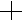
Khoa c«ng nghÖ |
Phan §×nh DiÖu
Lý
thuyÕt mËt m· an toµn th«ng tin |
|
Lý thuyÕt mËt m·
&
An toµn th«ng tin
Lý
thuyÕt mËt m·
&
An toµn th«ng tin
Phan §×nh DiÖu
§¹i häc Quèc gia Hµ Néi
Khoa C«ng nghÖ- §HQG Hµ néi
Néi dung
Lêi më ®Çu.................................................................4
Ch¬ng 1
Giíi thiÖu chung vÒ mËt m·......8
1.1. S¬ lùoc lÞch sö vÒ khoa mËt m·.................................. ........ 8
1.2. HÖ thèng mËt m·. M· theo khèi vµ m· theo dßng ........ 12
1.3. MËt m· khãa ®èi xøng vµ mËt m· cã khãa c«ng khai.... 15
1.4. C¸c bµi to¸n an toµn th«ng tin ........................................... 16
1.5. Th¸m m· vµ tÝnh an toµn cña c¸c hÖ mËt m·................... 18
Ch¬ng 2
C¬ së to¸n häc cña lý thuyÕt mËt m· ..20
2.1.Sè häc c¸c sè nguyªn.ThuËt to¸n Euclide.......................... 20
2.2. X¸c suÊt vµ thuËt to¸n x¸c suÊt......... ............................... 31
2.3. §é phøc t¹p tÝnh to¸n......................................................... 36
2.4.Sè nguyªn tè. Ph©n tÝch thµnh thõa sè.L«garit rêi r¹c.... 42
Ch¬ng 3
C¸c hÖ mËt m· kho¸ ®èi xøng ...... 55
3.1. C¸c hÖ mËt m· cæ ®iÓn........................................................ 55
3.2. Th¸m m· ®èi víi c¸c hÖ mËt m· cæ ®iÓn ......................... 63
3.3. MËt m· theo dßng vµ c¸c d·y sè gi¶ ngÉu nhiªn ...........72
3.4. HÖ mËt m· chuÈn DES ........................................ 80
Ch¬ng 4
C¸c hÖ mËt m· kho¸ c«ng khai ...........92
4.1. Giíi thiÖu më ®Çu.................................................................92
4.1. HÖ mËt m· kho¸ c«ng khai RSA ........................................97
4.2. HÖ mËt m· kho¸ c«ng khai Rabin.................................... 101
4.3. HÖ mËt m· kho¸ c«ng khai ElGamal................................103
4.4. C¸c hÖ mËt m· dùa trªn c¸c bµi to¸n NP-®Çy ®ñ............107
4.5. C¸c hÖ mËt m· x¸c suÊt kho¸ c«ng khai...........................111
Ch¬ng 5
Bµi to¸n x¸c nhËn vµ Ch÷ ký ®iÖn tö......115
5.1. Bµi to¸n x¸c nhËn vµ s¬ ®å ch÷ ký...................................115
5.2. S¬ ®å ch÷ ký ElGamal vµ chuÈn ch÷ ký ®iÖn tö............118
5.3. Hµm b¨m vµ ch÷ ký...........................................................122
5.4. Mét sè s¬ ®å ch÷ ký kh¸c..................................................127
5.5. Ch÷ ký kh«ng phñ ®Þnh ®îc vµ kh«ng chèi bá ®îc 131
Ch¬ng 6
C¸c s¬ ®å xng danh vµ x¸c nhËn danh tÝnh 136
6.1. VÊn ®Ò xng danh..............................................................136
6.2. S¬ ®å xng danh Schnorr..................................................137
6.3. S¬ ®å xng danh Okamoto................................................140
6.4. S¬ ®å xng danh Guillou-Quisquater..............................142
6.5. Giao thøc Feige-Fiat-Shamir...............................................145
6.6. PhÐp chøng minh kh«ng lé tri thøc..................................147
Ch¬ng 7
VÊn ®Ò ph©n phèi kho¸ vµ tho¶ thuËn kho¸ 152
7.1. Qu¶n trÞ kho¸ trong c¸c m¹ng truyÒn tin.........................152
7.2. Mét sè hÖ ph©n phèi kho¸................................................153
7.3. Trao ®æi kho¸ vµ tho¶ thuËn kho¸....................................157
Chó dÉn vÒ tµi liÖu tham kh¶o..................................................163
Lêi më ®Çu
Tõ khi con ngêi cã nhu cÇu trao ®æi th«ng tin, th tõ cho nhau th× nhu cÇu gi÷ bÝ mËt vµ b¶o vÖ tÝnh riªng t cña nh÷ng th«ng tin, th tõ ®îc trao ®æi ®ã còng nÈy sinh. H×nh thøc th«ng tin ®îc trao ®æi phæ biÕn vµ sím nhÊt lµ díi d¹ng c¸c v¨n b¶n, ®Ó gi÷ bÝ mËt cña th«ng tin ngêi ta ®· sím nghÜ ®Õn c¸ch che dÊu néi dung c¸c v¨n b¶n b»ng c¸ch biÕn d¹ng c¸c v¨n b¶n ®ã ®Ó ngêi ngoµi kh«ng ®äc hiÓu ®îc, ®ång thêi cã c¸ch kh«i phôc l¹i nguyªn d¹ng ban ®Çu ®Ó ngêi trong cuéc vÉn ®äc hiÓu ®îc; theo c¸ch gäi ngµy nay th× d¹ng biÕn ®æi cña v¨n b¶n ®îc gäi lµ mËt m· cña v¨n b¶n, c¸ch lËp mËt m· cho mét v¨n b¶n ®îc gäi lµ phÐp lËp mËt m·, cßn c¸ch kh«i phôc l¹i nguyªn d¹ng ban ®Çu cña v¨n b¶n tõ b¶n mËt m· ®îc gäi lµ phÐp gi¶i m·. PhÐp lËp mËt m· vµ phÐp gi¶i m· ®îc thùc hiÖn nhê mét ch×a kho¸ riªng nµo ®ã mµ chØ nh÷ng ngêi trong cuéc ®îc biÕt, sau ®©y ta sÏ gäi lµ kho¸ mËt m·. Ngêi ngoµi cuéc kh«ng ®îc biÕt kho¸ mËt m·, nªn dï cã "¨n c¾p" ®îc b¶n mËt m· trªn ®êng truyÒn tin, vÒ nguyªn t¾c còng kh«ng thÓ gi¶i m· ®Ó hiÓu ®îc néi dung cña v¨n b¶n truyÒn ®i.
HiÓn nhiªn, tiªu chuÈn cña mét b¶n mËt m· lµ t¹o ®îc tÝnh bÝ mËt cho v¨n b¶n; v× vËy kh¸i niÖm bÝ mËt lµ kh¸i niÖm cèt lâi nhÊt ®èi víi mét lý thuyÕt vÒ mËt m·. Cã thÓ cã mét ®Þnh nghÜa khoa häc cho kh¸i niÖm bÝ mËt hay kh«ng? §· cã nhiÒu c¸ch tiÕp cËn ®Ó t×m hiÓu néi dung cña kh¸i niÖm bÝ mËt, nhng mét ®Þnh nghÜa khoa häc, hay h¬n n÷a, mét ®Þnh nghÜa to¸n häc cho kh¸i niÖm ®ã th× cha cã. Mét c¸ch tiÕp cËn kh¸ phæ biÕn lµ g¾n kh¸i niÖm bÝ mËt víi kh¸i niÖm "ngÉu nhiªn", nÕu mét v¨n b¶n râ cã mét néi dung x¸c ®Þnh th× ®iÒu ta mong muèn lµ b¶n mËt m· cña nã ph¶i lµ mét b¶n gåm c¸c ký tù ®îc s¾p xÕp hçn ®én, cã vÎ nh ngÉu nhiªn khiÕn ngêi ngoµi nh×n vµo kh«ng thÓ x¸c ®Þnh ®îc néi dung cña v¨n b¶n gèc. Tuy nhiªn, nÕu "bÝ mËt" lµ kh¸i niÖm cha ®Þnh nghÜa ®îc, th× kh¸i niÖm "ngÉu nhiªn", hay cô thÓ h¬n, kh¸i niÖm "d·y bit ngÉu nhiªn", còng khã ®Þnh nghÜa nh vËy, ta cha qui ®Þnh ®îc mét tiªu chuÈn to¸n häc ®Ó x¸c ®Þnh mét d·y bit cã lµ "ngÉu nhiªn" hay kh«ng, mµ chØ míi t×m hiÓu ®îc mét sè thuéc tÝnh gÇn víi "ngÉu nhiªn", dïng lµm c¨n cø ®Ó t¹m x¸c ®Þnh mét d·y bit cã lµ "gi¶ ngÉu nhiªn" theo nghÜa cã c¸c thuéc tÝnh ®ã hay kh«ng mµ th«i.
Tõ mÊy thËp niªn gÇn ®©y, bíc vµo kû nguyªn m¸y tÝnh, còng nh ®èi víi nhiÒu lÜnh vùc kh¸c, lÜnh vùc mËt m· còng ®· cã nh÷ng chuyÓn biÕn to lín tõ giai ®o¹n mËt m· truyÒn thèng sang giai ®o¹n mËt m· m¸y tÝnh; m¸y tÝnh ®iÖn tö ®îc sö dông ngµy cµng phæ biÕn trong viÖc lËp mËt m·, gi¶i mËt m·, vµ nh÷ng chuyÓn biÕn ®ã ®· kÝch thÝch viÖc nghiªn cøu c¸c gi¶i ph¸p mËt m·, biÕn viÖc nghiªn cøu mËt m· thµnh mét khoa häc cã ®èi tîng ngµy cµng réng lín vµ ®îc sö dông cã hiÖu qu¶ trong nhiÒu ph¹m vi ho¹t ®éng cña cuéc sèng. V× c¸c nghiÖp vô chñ yÕu cña mËt m· ®îc thùc hiÖn b»ng m¸y tÝnh, nªn c¸c kh¸i niÖm bÝ mËt, ngÉu nhiªn còng dÇn ®îc "m¸y tÝnh ho¸", vµ víi sù ra ®êi cña Lý thuyÕt vÒ ®é phøc t¹p tÝnh to¸n vµo gi÷a nh÷ng n¨m 1960, c¸c kh¸i niÖm ®ã t×m ®îc mét néi dung chung cã thÓ ®îc nghiªn cøu mét c¸ch to¸n häc lµ tÝnh phøc t¹p. B©y giê ta cã thÓ nãi, mét b¶n mËt m· ®èi víi anh lµ bÝ mËt, nÕu tõ b¶n mËt m· ®ã ®Ó t×m ra b¶n râ anh ph¶i thùc hiÖn mét tiÕn tr×nh tÝnh to¸n mµ ®é phøc t¹p cña nã vît qu¸ mäi n¨ng lùc tÝnh to¸n (kÓ c¶ mäi m¸y tÝnh) cña anh; mét d·y bit cã thÓ xem lµ ngÉu nhiªn , nÕu dùa vµo mét ®o¹n bit ®· biÕt ®Ó t×m mét bit tiÕp theo cña d·y anh còng ph¶i thùc hiÖn mét tiÕn tr×nh tÝnh to¸n cã ®é phøc t¹p cùc lín t¬ng tù nh nãi trªn.
ViÖc chuyÓn sang giai ®o¹n mËt m· m¸y tÝnh tríc hÕt ®· cã t¸c dông ph¸t triÓn vµ hiÖn ®¹i ho¸ nhiÒu hÖ thèng mËt m· theo kiÓu truyÒn thèng, lµm cho c¸c hÖ thèng ®ã cã c¸c cÊu tróc tinh tÕ h¬n, ®ßi hái lËp mËt m· vµ gi¶i m· phøc t¹p h¬n, do ®ã hiÖu qu¶ gi÷ bÝ mËt cña c¸c gi¶i ph¸p mËt m· ®îc n©ng cao h¬n tríc rÊt nhiÒu. Tuy nhiªn, mét bíc chuyÓn cã tÝnh chÊt c¸ch m¹ng mµ mËt m· m¸y tÝnh mang l¹i lµ viÖc ph¸t minh ra c¸c hÖ mËt m· cã kho¸ c«ng khai, b¾t ®Çu tõ cuèi nh÷ng n¨m 1970, c¬ së lý thuyÕt cña c¸c ph¸t minh ®ã lµ sù tån t¹i cña c¸c hµm mét phÝa (one-way function), tøc lµ nh÷ng hµm sè sè häc y = f (x) mµ viÖc tÝnh theo phÝa thuËn tõ x tÝnh y lµ t¬ng ®èi dÔ, nhng viÖc tÝnh theo phÝa ngîc tõ y t×m l¹i x (x = f--1(y)) lµ cùc kú phøc t¹p. C¸c hÖ mËt m· cã kho¸ c«ng khai ®· lµm thay ®æi vÒ b¶n chÊt viÖc tæ chøc c¸c hÖ truyÒn th«ng b¶o mËt, lµm dÔ dµng cho viÖc b¶o mËt trªn c¸c hÖ truyÒn th«ng c«ng céng, vµ do tÝnh chÊt ®Æc biÖt ®ã chóng ®· lµ c¬ së cho viÖc ph¸t triÓn nhiÒu giao thøc an toµn th«ng tin kh¸c khi sö dông m¹ng truyÒn th«ng c«ng céng, ch¼ng h¹n c¸c lo¹i giao thøc vÒ x¸c nhËn nguån tin vµ ®Þnh danh ngêi göi, ch÷ ký ®iÖn tö, c¸c giao thøc x¸c nhËn kh«ng ®Ó lé th«ng tin g× kh¸c ngoµi viÖc x¸c nhËn, c¸c giao thøc trao ®æi kho¸ trong tæ chøc truyÒn tin b¶o mËt vµ trong x¸c nhËn, v.v..., vµ gÇn ®©y trong viÖc ph¸t triÓn nhiÒu giao thøc ®Æc thï kh¸c trong c¸c giao dÞch ng©n hµng vµ th¬ng m¹i ®iÖn tö, ph¸t hµnh vµ mua b¸n b»ng tiÒn ®iÖn tö,... Còng cÇn nãi thªm lµ lý thuyÕt mËt m· hiÖn ®¹i, tøc lµ mËt m· m¸y tÝnh trªn c¬ së lý thuyÕt vÒ ®é phøc t¹p tÝnh to¸n tuy cã nhiÒu øng dông ®Æc s¾c vµ cã triÓn väng to lín, nhng còng míi ®ang trong giai ®o¹n ph¸t triÓn bíc ®Çu, cßn ph¶i kh¾c phôc nhiÒu khã kh¨n vµ t×m kiÕm thªm nhiÒu c¬ së v÷ng ch¾c míi ®Ó tiÕp tôc hoµn thiÖn vµ ph¸t triÓn. Ch¼ng h¹n, nh trªn ®· nãi, mét c¬ së quan träng cña lý thuyÕt mËt m· hiÖn ®¹i lµ sù tån t¹i cña c¸c hµm mét phÝa, nhng ngay cã thËt tån t¹i c¸c hµm mét phÝa hay kh«ng còng cßn lµ mét bµi to¸n cha cã c©u tr¶ lêi! Ta chØ míi ®ang cã mét sè hµm mét phÝa theo sù hiÓu biÕt cña con ngêi hiÖn nay, nhng cha chøng minh ®îc cã mét hµm cô thÓ nµo ®ã ch¾c ch¾n lµ hµm mét phÝa! Tuy nhiªn, nÕu theo quan ®iÓm khoa häc hiÖn ®¹i, ta kh«ng xem môc ®Ých khoa häc lµ ®i t×m nh÷ng ch©n lý ch¾c ch¾n tuyÖt ®èi, mµ lµ ®i t×m nh÷ng c¸ch gi¶i quyÕt vÊn ®Ò (problem solving) gÆp trong thùc tiÔn, th× ta vÉn cã thÓ tin vµo nh÷ng gi¶i ph¸p "t¬ng ®èi" rÊt cã hiÖu qu¶ mµ lý thuyÕt hiÖn ®¹i vÒ mËt m· ®ang cèng hiÕn cho con ngêi hiÖn nay.
TËp gi¸o tr×nh Lý thuyÕt mËt m· vµ an toµn th«ng tin nµy ®îc so¹n ®Ó phôc vô cho viÖc häc tËp cña sinh viªn c¸c líp theo ch¬ng tr×nh ®¹i häc hoÆc cao häc thuéc ngµnh C«ng nghÖ th«ng tin cña §¹i häc Quèc gia Hµ néi. Trong kho¶ng m¬i n¨m gÇn ®©y, trªn thÕ giíi ®· xuÊt hiÖn nhiÒu s¸ch vµ tµi liÖu cã tÝnh chÊt gi¸o khoa hoÆc tham kh¶o vÒ lý thuyÕt mËt m· hiÖn ®¹i vµ øng dông. Ngêi viÕt tËp gi¸o tr×nh nµy chØ cã cè g¾ng lùa chän vµ s¾p xÕp mét sè néi dung mµ m×nh nghÜ lµ cÇn thiÕt vµ thÝch hîp nhÊt ®Ó trong mét ph¹m vi h¹n chÕ vÒ thêi gian (vµ kh«ng gian) tr×nh bµy vµ giíi thiÖu ®îc cho ngêi häc mét c¸ch t¬ng ®èi hÖ thèng nh÷ng kiÕn thøc c¬ b¶n vÒ lý thuyÕt mËt m· hiÖn ®¹i, bao gåm c¶ mét sè kiÕn thøc to¸n häc cÇn thiÕt. Gi¸o tr×nh nµy ®· ®îc gi¶ng d¹y cho sinh viªn c¸c kho¸ cao häc vÒ C«ng nghÖ th«ng tin thuéc §¹i häc B¸ch khoa Hµ néi vµ khoa C«ng nghÖ §¹i häc Quèc gia Hµ néi tõ n¨m 1997 ®Õn 2004. Ngêi viÕt ch©n thµnh c¶m ¬n c¸c b¹n ®ång nghiÖp vµ ngêi ®äc chØ cho nh÷ng chç thiÕu sãt ®Ó cã thÓ kÞp thêi söa ch÷a cho nh÷ng lÇn in sau, nÕu cã.
Th¸ng 12 n¨m 2002
Phan §×nh DiÖu
CH¦¥NG I
Giíi thiÖu chung vÒ mËt m·
1.1. S¬ lîc lÞch sö vÒ mËt m·.
Nh ®· giíi thiÖu trong Lêi më ®Çu, nhu cÇu sö dông mËt m· ®· xuÊt hiÖn tõ rÊt sím, khi con ngêi biÕt trao ®æi vµ truyÒn ®a th«ng tin cho nhau, ®Æc biÖt khi c¸c th«ng tin ®ã ®· ®îc thÓ hiÖn díi h×nh thøc ng«n ng÷, th tõ. LÞch sö cho ta biÕt, c¸c h×nh thøc mËt m· s¬ khai ®· ®îc t×m thÊy tõ kho¶ng bèn ngh×n n¨m tríc trong nÒn v¨n mÞnh Ai cËp cæ ®¹i. Tr¶i qua hµng ngh×n n¨m lÞch sö, mËt m· ®· ®îc sö dông réng r·i trªn kh¾p thÕ giíi tõ §«ng sang T©y ®Ó gi÷ bÝ mËt cho viÖc giao lu th«ng tin trong nhiÒu lÜnh vùc ho¹t ®éng gi÷a con ngêi vµ c¸c quèc gia, ®Æc biÖt trong c¸c lÜnh vùc qu©n sù, chÝnh trÞ, ngo¹i giao. MËt m· tríc hÕt lµ mét lo¹i ho¹t ®éng thùc tiÔn, néi dung chÝnh cña nã lµ ®Ó gi÷ bÝ mËt th«ng tin (ch¼ng h¹n díi d¹ng mét v¨n b¶n) tõ mét ngêi göi A ®Õn mét ngêi nhËn B, A ph¶i t¹o cho v¨n b¶n ®ã mét b¶n m· mËt t¬ng øng, vµ thay v× göi v¨n b¶n râ th× A chØ göi cho B b¶n m· mËt, B nhËn ®îc b¶n m· mËt vµ sÏ cã c¸ch tõ ®ã kh«i phôc l¹i v¨n b¶n râ ®Ó hiÓu ®îc th«ng tin mµ A muèn göi cho m×nh. V× b¶n göi ®i thêng ®îc chuyÓn qua c¸c con ®êng c«ng khai nªn ngêi ngoµi cã thÓ "lÊy trém" ®îc, nhng do ®ã lµ b¶n mËt m· nªn kh«ng ®äc hiÓu ®îc, cßn A cã thÓ t¹o ra b¶n m· mËt vµ B cã thÓ gi¶i b¶n m· mËt thµnh b¶n râ ®Ó hiÓu ®îc lµ do gi÷a hai ngêi ®· cã mét tháa thuËn vÒ mét ch×a khãa chung, chØ víi ch×a khãa chung nµy th× A míi t¹o ®îc b¶n m· mËt tõ b¶n râ, vµ B míi tõ b¶n m· mËt kh«i phôc l¹i ®îc b¶n râ. Sau nµy ta sÏ gäi ®¬n gi¶n ch×a khãa chung ®ã lµ khãa mËt m·. TÊt nhiªn ®Ó thùc hiÖn ®îc mét phÐp mËt m·, ta cßn cÇn cã mét thuËt to¸n biÕn b¶n râ, cïng víi khãa mËt m·, thµnh b¶n m· mËt, vµ mét thuËt to¸n ngîc l¹i, biÕn b¶n m· mËt, cïng víi khãa mËt m·, thµnh b¶n râ. C¸c thuËt to¸n ®ã ®îc gäi t¬ng øng lµ thuËt to¸n lËp mËt m· vµ thuËt to¸n gi¶i mËt m·. C¸c thuËt to¸n nµy thêng kh«ng nhÊt thiÕt ph¶i gi÷ bÝ mËt, mµ c¸i cÇn ®îc gi÷ tuyÖt mËt lu«n lu«n lµ khãa mËt m·. Trong thùc tiÔn, ®· cã ho¹t ®éng b¶o mËt th× còng cã ho¹t ®éng ngîc l¹i lµ kh¸m ph¸ bÝ mËt tõ c¸c b¶n m· mËt "lÊy trém" ®îc, ta thêng gäi ho¹t ®éng nµy lµ m· th¸m, ho¹t ®éng nµy quan träng kh«ng kÐm g× ho¹t ®éng b¶o mËt! V× c¸c thuËt to¸n lËp mËt m· vµ gi¶i mËt m· kh«ng nhÊt thiÕt lµ bÝ mËt, nªn m· th¸m thêng ®îc tËp trung vµo viÖc t×m khãa mËt m·, do ®ã còng cã ngêi gäi c«ng viÖc ®ã lµ ph¸ khãa.
Suèt mÊy ngh×n n¨m lÞch sö, c¸c th«ng b¸o, th tõ ®îc truyÒn ®a vµ trao ®æi víi nhau thêng lµ c¸c v¨n b¶n, tøc lµ cã d¹ng c¸c d·y ký tù trong mét ng«n ng÷ nµo ®ã; v× vËy, c¸c thuËt to¸n lËp mËt m· thêng còng ®¬n gi¶n lµ thuËt to¸n x¸o trén, thay ®æi c¸c ký tù ®îc x¸c ®Þnh bëi c¸c phÐp chuyÓn dÞch, thay thÕ hay ho¸n vÞ c¸c ký tù trong b¶ng ký tù cña ng«n ng÷ t¬ng øng; khãa mËt m· lµ th«ng tin dïng ®Ó thùc hiÖn phÐp lËp mËt m· vµ gi¶i mËt m· cô thÓ, thÝ dô nh sè vÞ trÝ ®èi víi phÐp chuyÓn dÞch, b¶ng x¸c ®Þnh c¸c cÆp ký tù t¬ng øng ®èi víi phÐp thay thÕ hay ho¸n vÞ,... MËt m· cha ph¶i lµ mét khoa häc, do ®ã cha cã nhiÒu kiÕn thøc s¸ch vë ®Ó l¹i, tuy nhiªn ho¹t ®éng b¶o mËt vµ th¸m m· trong lÞch sö c¸c cuéc ®Êu tranh chÝnh trÞ, ngo¹i giao vµ qu©n sù th× hÕt søc phong phó, vµ mËt m· ®· cã nhiÒu t¸c ®éng rÊt quan träng ®a ®Õn nh÷ng kÕt qu¶ l¾m khi cã ý nghÜa quyÕt ®Þnh trong c¸c cuéc ®Êu tranh ®ã. Do trong mét thêi gian dµi, b¶n th©n ho¹t ®éng mËt m· còng ®îc xem lµ mét bÝ mËt, nªn c¸c tµi liÖu kü thuËt vÒ mËt m· ®îc phæ biÕn ®Õn nay thêng chØ ghi l¹i c¸c kiÕn thøc kinh nghiÖm, thØnh tho¶ng míi cã mét vµi "ph¸t minh" nh c¸c hÖ mËt m· VigenÌre vµo thÕ kû 16 hoÆc hÖ mËt m· Hill ra ®êi n¨m 1929 lµ c¸c hÖ m· thùc hiÖn phÐp chuyÓn dÞch (®èi víi m· VigenÌre) hay phÐp thay thÕ (m· Hill) ®ång thêi trªn mét nhãm ký tù chø kh«ng ph¶i trªn tõng ký tù riªng rÏ. VÊn ®Ò th¸m m·, ngîc l¹i, khi thµnh c«ng thêng ®a ®Õn nh÷ng cèng hiÕn næi tréi vµ Ên tîng trong nh÷ng t×nh huèng gay cÊn cña c¸c cuéc ®Êu tranh, vµ còng thêng ®ßi hái nhiÒu tµi n¨ng ph¸t hiÖn víi nh÷ng kinh nghiÖm vµ suy luËn tinh tÕ h¬n, nªn ®Ó l¹i nhiÒu chuyÖn hÊp dÉn h¬n. NhiÒu c©u chuyÖn kú thó cña lÞch sö th¸m m· ®· ®îc thuËt l¹i trong quyÓn s¸ch næi tiÕng cña David Kahn The Codebreakers . The Story of Secret Writing , xuÊt b¶n n¨m 1967 (s¸ch ®· ®îc dÞch ra nhiÒu thø tiÕng, cã b¶n dÞch tiÕng ViÖt Nh÷ng ngêi m· th¸m, 3 tËp, xuÊt b¶n t¹i Hµ néi n¨m 1987).
Bíc sang thÕ kû 20, víi nh÷ng tiÕn bé liªn tôc cña kü thuËt tÝnh to¸n vµ truyÒn th«ng, ngµnh mËt m· còng ®· cã nh÷ng tiÕn bé to lín. Vµo nh÷ng thËp niªn ®Çu cña thÕ kû, sù ph¸t triÓn cña c¸c kü thuËt biÓu diÔn, truyÒn vµ xö lý tÝn hiÖu ®· cã t¸c ®éng gióp cho c¸c ho¹t ®éng lËp vµ gi¶i mËt m· tõ thñ c«ng chuyÓn sang c¬ giíi hãa råi ®iÖn tö hãa. C¸c v¨n b¶n, c¸c b¶n mËt m· tríc ®©y ®îc viÕt b»ng ng«n ng÷ th«ng thêng nay ®îc chuyÓn b»ng kü thuËt sè thµnh c¸c d·y tÝn hiÖu nhÞ ph©n, tøc c¸c d·y bit, vµ c¸c phÐp biÕn ®æi trªn c¸c d·y ký tù ®îc chuyÓn thµnh c¸c phÐp biÕn ®æi trªn c¸c d·y bit, hay c¸c d·y sè, viÖc thùc hiÖn c¸c phÐp lËp m·, gi¶i m· trë thµnh viÖc thùc hiÖn c¸c hµm sè sè häc. To¸n häc vµ kü thuËt tÝnh to¸n b¾t ®Çu trë thµnh c«ng cô cho viÖc ph¸t triÓn khoa häc vÒ mËt m·. Kh¸i niÖm trung t©m cña khoa häc mËt m· lµ kh¸i niÖm bÝ mËt. §ã lµ mét kh¸i niÖm phæ biÕn trong ®êi sèng, nhng liÖu cã thÓ cho nã mét néi dung cã thÓ ®Þnh nghÜa ®îc mét c¸ch to¸n häc kh«ng? Nh ®· lîc qua trong Lêi më ®Çu, kh¸i niÖm bÝ mËt tho¹t ®Çu ®îc g¾n víi kh¸i niÖm ngÉu nhiªn, råi vÒ sau trong nh÷ng thËp niªn gÇn ®©y, víi kh¸i niÖm phøc t¹p, cô thÓ h¬n lµ kh¸i niÖm ®é phøc t¹p tÝnh to¸n. ViÖc sö dông lý thuyÕt x¸c suÊt vµ ngÉu nhiªn lµm c¬ së ®Ó nghiªn cøu mËt m· ®· gióp C.Shannon ®a ra kh¸i niÖm bÝ mËt hoµn toµn cña mét hÖ mËt m· tõ n¨m 1948, khëi ®Çu cho mét lý thuyÕt x¸c suÊt vÒ mËt m·. Trong thùc tiÔn lµm mËt m·, c¸cd·y bit ngÉu nhiªn ®îc dïng ®Ó trén víi b¶n râ (díi d¹ng mét d·y bit x¸c ®Þnh) thµnh ra b¶n mËt m·. Lµm thÕ nµo ®Ó t¹o ra c¸c d·y bit ngÉu nhiªn? Cã thÓ t¹o ra b»ng ph¬ng ph¸p vËt lý ®¬n gi¶n nh sau: ta tung ®ång xu lªn, nÕu ®ång xu r¬i xuèng ë mÆt sÊp th× ta ghi bit 0, ë mÆt ngöa th× ta ghi bit 1; tung n lÇn ta sÏ ®îc mét d·y n bit, d·y bit thu ®îc nh vËy cã thÓ ®îc xem lµ d·y bit ngÉu nhiªn. Nhng t¹o ra theo c¸ch nh vËy th× khã cã thÓ sö dông mét c¸ch phæ biÕn, v× kh«ng thÓ t×m ra qui luËt ®Ó theo ®ã mµ sinh ra d·y bit ngÉu nhiªn ®îc. ë ®©y ta gÆp mét khã kh¨n cã tÝnh b¶n chÊt: nÕu cã qui luËt th× ®· kh«ng cßn lµ ngÉu nhiªn n÷a råi! Nh vËy, nÕu ta muèn t×m theo qui luËt, th× kh«ng bao giê cã thÓ t×m ra c¸c d·y bit ngÉu nhiªn, mµ cïng l¾m còng chØ cã thÓ ®îc c¸c d·y bit gÇn ngÉu nhiªn, hay gi¶ ngÉu nhiªn, mµ th«i. Tõ nhiÒu chôc n¨m nay, ngêi ta ®· nghiªn cøu ®Ò xuÊt nhiÒu thuËt to¸n to¸n häc ®Ó sinh ra c¸c d·y bit gi¶ ngÉu nhiªn, vµ còng ®· ®a ra nhiÒu thuéc tÝnh ®Ó ®¸nh gi¸ mét d·y bit gi¶ ngÉu nhiªn cã ®¸ng ®îc xem lµ "gÇn" ngÉu nhiªn hay kh«ng. Mét vµi thuéc tÝnh chñ yÕu mµ ngêi ta ®· ®Ò xuÊt lµ: cho mét d·y bit X = (x1,x2,.....,xn,...); d·y ®ã ®îc xem lµ gi¶ ngÉu nhiªn "tèt" nÕu x¸c suÊt xuÊt hiÖn bit 0 hay bit 1 trong toµn d·y ®ã còng nh trong mäi d·y con bÊt kú cña nã ®Òu b»ng 1/2; hoÆc mét tiªu chuÈn kh¸c: nÕu mäi ch¬ng tr×nh sinh ra ®îc ®o¹n ®Çu n bit cña d·y ®Òu ph¶i cã ®é phøc t¹p (hay ®é dµi) cì n ký tù ! VÒ sau nµy, khi lý thuyÕt vÒ ®é phøc t¹p tÝnh to¸n ®· ®îc ph¸t triÓn th× tiªu chuÈn vÒ ngÉu nhiªn còng ®îc qui vÒ tiªu chuÈn phøc t¹p tÝnh to¸n, cô thÓ mét d·y bit X ®îc xem lµ gi¶ ngÉu nhiªn "tèt" nÕu mäi thuËt to¸n t×m ®îc bit thø n (xn) khi biÕt c¸c bit tríc ®ã (x1,,...,xn-1) víi x¸c suÊt ®óng > 1/2 ®Òu ph¶i cã ®é phøc t¹p tÝnh to¸n thuéc líp NP-khã!
Lý thuyÕt vÒ ®é phøc t¹p tÝnh to¸n ra ®êi tõ gi÷a nh÷ng n¨m 1960 ®· cho ta mét c¸ch thÝch hîp ®Ó qui yªu cÇu bÝ mËt hoÆc ngÉu nhiªn vÒ mét yªu cÇu cã thÓ ®Þnh nghÜa ®îc lµ yªu cÇu vÒ ®é phøc t¹p tÝnh to¸n. B©y giê ta cã thÓ nãi: mét gi¶i ph¸p mËt m· lµ b¶o ®¶m bÝ mËt, nÕu mäi thuËt to¸n th¸m m·, nÕu cã, ®Òu ph¶i ®îc thùc hiÖn víi ®é phøc t¹p tÝnh to¸n cùc lín! Cùc lín lµ bao nhiªu? Lµ vît qu¸ giíi h¹n kh¶ n¨ng tÝnh to¸n (bao gåm c¶ m¸y tÝnh) mµ ngêi th¸m m· cã thÓ cã. VÒ lý thuyÕt, cã thÓ xem ®ã lµ nh÷ng ®é phøc t¹p tÝnh to¸n víi tèc ®é t¨ng vît qu¸ hµm mò, hoÆc thuéc lo¹i NP-khã. Tuy nhiªn, lý thuyÕt ®é phøc t¹p tÝnh to¸n kh«ng chØ cèng hiÕn cho ta mét kh¸i niÖm ®Ó gióp chÝnh x¸c hãa tiªu chuÈn bÝ mËt cña c¸c gi¶i ph¸p mËt m·, mµ cßn më ra mét giai ®o¹n míi cña ngµnh mËt m·, biÕn ngµnh mËt m· thµnh mét khoa häc cã néi dung lý luËn phong phó vµ cã nh÷ng øng dông thùc tiÔn quan träng trong nhiÒu lÜnh vùc cña ®êi sèng hiÖn ®¹i. Bíc ngoÆt cã tÝnh c¸ch m¹ng trong lÞch sö khoa häc mËt m· hiÖn ®¹i xÈy ra vµo n¨m 1976 khi hai t¸c gi¶ Diffie vµ Hellman ®a ra kh¸i niÖm vÒ mËt m· khãa c«ng khai vµ mét ph¬ng ph¸p trao ®æi c«ng khai ®Ó t¹o ra mét khãa bÝ mËt chung mµ tÝnh an toµn ®îc b¶o ®¶m bëi ®é khã cña mét bµi to¸n to¸n häc cô thÓ (lµ bµi to¸n tÝnh "l«garit rêi r¹c"). Hai n¨m sau, n¨m 1978, Rivest, Shamir vµ Adleman t×m ra mét hÖ mËt m· khãa c«ng khai vµ mét s¬ ®å ch÷ ký ®iÖn tö hoµn toµn cã thÓ øng dông trong thùc tiÔn, tÝnh b¶o mËt vµ an toµn cña chóng ®îc b¶o ®¶m b»ng ®é phøc t¹p cña mét bµi to¸n sè häc næi tiÕng lµ bµi to¸n ph©n tÝch sè nguyªn thµnh c¸c thõa sè nguyªn tè. Sau ph¸t minh ra hÖ mËt m· ®ã (mµ nay ta thêng gäi lµ hÖ RSA), viÖc nghiªn cøu ®Ó ph¸t minh ra c¸c hÖ mËt m· khãa c«ng khai kh¸c, vµ øng dông c¸c hÖ mËt m· khãa c«ng khai vµo c¸c bµi to¸n kh¸c nhau cña an toµn th«ng tin ®· ®îc tiÕn hµnh réng r·i, lý thuyÕt mËt m· vµ an toµn th«ng tin trë thµnh mét lÜnh vùc khoa häc ®îc ph¸t triÓn nhanh trong vµi ba thËp niªn cuèi cña thÕ kû 20, l«i cuèn theo sù ph¸t triÓn cña mét sè bé m«n cña to¸n häc vµ tin häc. Trong c¸c ch¬ng vÒ sau cña tËp gi¸o tr×nh nµy ta sÏ lÇn lît lµm quen víi mét sè thµnh qu¶ chñ yÕu cña lý thuyÕt ®ã.
1.2. C¸c hÖ thèng mËt m·.
1.2.1. S¬ ®å hÖ thèng mËt m·.
MËt m· ®îc sö dông ®Ó b¶o vÖ tÝnh bÝ mËt cña th«ng tin khi th«ng tin ®îc truyÒn trªn c¸c kªnh truyÒn th«ng c«ng céng nh c¸c kªnh bu chÝnh, ®iÖn tho¹i, m¹ng truyÒn th«ng m¸y tÝnh, m¹ng Internet, v.v... Gi¶ thö mét ngêi göi A muèn göi ®Õn mét ngêi nhËn B mét v¨n b¶n (ch¼ng h¹n, mét bøc th) p, ®Ó b¶o mËt A lËp cho p mét b¶n mËt m· c, vµ thay cho viÖc göi p, A göi cho B b¶n mËt m· c, B nhËn ®îc c vµ "gݶi m·" c ®Ó l¹i ®îc v¨n b¶n p nh A ®Þnh göi. §Ó A biÕn p thµnh c vµ B biÕn ngîc l¹i c thµnh p , A vµ B ph¶i tháa thuËn tríc víi nhau c¸c thuËt to¸n lËp m· vµ gi¶i m·, vµ ®Æc biÖt mét khãa mËt m· chung K ®Ó thùc hiÖn c¸c thuËt to¸n ®ã. Ngêi ngoµi, kh«ng biÕt c¸c th«ng tin ®ã (®Æc biÖt, kh«ng biÕt khãa K), cho dï cã lÊy trém ®îc c trªn kªnh truyÒn th«ng c«ng céng, còng kh«ng thÓ t×m ®îc v¨n b¶n p mµ hai ngêi A, B muèn göi cho nhau. Sau ®©y ta sÏ cho mét ®Þnh nghÜa h×nh thøc vÒ s¬ ®å mËt m· vµ c¸ch thøc thùc hiÖn ®Ó lËp mËt m· vµ gi¶i mËt m·.
§Þnh nghÜa 1.2.1. Mét s¬ ®å hÖ thèng mËt m· lµ mét bé n¨m
S = (P , C , K , E , D ) (1)
tháa m·n c¸c ®iÒu kiÖn sau ®©y:
P lµ mét tËp h÷u h¹n c¸c ký tù b¶n râ,
C lµ mét tËp h÷u h¹n c¸c ký tù b¶n m·,
K lµ mét tËp h÷u h¹n c¸c khãa,
E lµ mét ¸nh x¹ tõ KP vµo C , , ®îc gäi lµ phÐp lËp mËt m·; vµ D lµ mét ¸nh x¹ tõ K C vµo P , ®îc gäi lµ phÐp gi¶i m·. Víi mçi KK , ta ®Þnh nghÜa eK : P C , dK :C P lµ hai hµm cho bëi :
x P : eK(x) = E (K,x) ; y C : dK(y) = D (K,y).
eK vµ dK ®îc gäi lÇn lît lµ hµm lËp m· vµ hµm gi¶i m· øng víi khãa mËt m· K. C¸c hµm ®ã ph¶i tháa m·n hÖ thøc:
x P : dK(eK(x)) = x.
VÒ sau, ®Ó thuËn tiÖn ta sÏ gäi mét danh s¸ch (1) tho¶ m·n c¸c tÝnh chÊt kÓ trªn lµ mét s¬ ®å hÖ thèng mËt m· , cßn khi ®· chän cè ®Þnh mét kho¸ K, th× danh s¸ch (P , C , eK , dK) lµ mét hÖ mËt m· thuéc s¬ ®å ®ã.
Trong ®Þnh nghÜa nµy, phÐp lËp mËt m· (gi¶i m·) ®îc ®Þnh nghÜa cho tõng ký tù b¶n râ (b¶n m·). Trong thùc tÕ, b¶n râ cña mét th«ng b¸o thêng lµ mét d·y ký tù b¶n râ, tøc lµ phÇn tö cña tËp P *, vµ b¶n mËt m· còng lµ mét d·y c¸c ký tù b¶n m·, tøc lµ phÇn tö cña tËp C *, viÖc më réng c¸c hµm eK vµ dK lªn c¸c miÒn t¬ng øng P * vµ C * ®Ó ®îc c¸c thuËt to¸n lËp mËt m· vµ gi¶i m· dïng trong thùc tÕ sÏ ®îc tr×nh bµy trong tiÕt sau. C¸c tËp ký tù b¶n râ vµ b¶n m· thêng dïng lµ c¸c tËp ký tù cña ng«n ng÷ th«ng thêng nh tiÕng ViÖt, tiÕng Anh (ta ký hiÖu tËp ký tù tiÕng Anh lµ A tøc A = {a,b,c,...,x,y,z } gåm 26 ký tù; tËp ký tù nhÞ ph©n B chØ gåm hai ký tù 0 vµ 1; tËp c¸c sè nguyªn kh«ng ©m bÐ h¬n mét sè n nµo ®ã (ta ký hiÖu tËp nµy lµ Zn tøc Zn = {0,1,2,...., n- 1}). Chó ý r»ng cã thÓ xem B = Z2. §Ó thuËn tiÖn, ta còng thêng ®ång nhÊt tËp ký tù tiÕng Anh A víi tËp gåm 26 sè nguyªn kh«ng ©m ®Çu tiªn Z26 = {0,1,2,...., 24,25} víi sù t¬ng øng sau ®©y:
a b c d e f g h i j k l m n o p q r s t u v w x y z
0 1 2 3 4 5 6 7 8 9 10 11 12 13 14 15 16 17 18 19 20 21 22 23 24 25.
§«i khi ta còng dïng víi t c¸ch tËp ký tù b¶n râ hay b¶n m· lµ c¸c tËp tÝch cña c¸c tËp nãi trªn, ®Æc biÖt lµ c¸c tËp Am , B m , Znm .
1.2.2. M· theo khèi vµ m· theo dßng.
Nh nãi ë trªn, b¶n râ cña th«ng b¸o mµ ta muèn göi ®i thêng lµ mét d·y ký tù, trong khi theo ®Þnh nghÜa cña s¬ ®å mËt m·, hµm lËp mËt m· vµ hµm gi¶i m· ®îc ®Þnh nghÜa cho tõng ký tù. Tõ c¸c ®Þnh nghÜa cña hµm lËp mËt m· vµ hµm gi¶i m·, ta më réng thµnh thuËt to¸n lËp m· (vµ gi¶i m·) x¸c ®Þnh cho mäi b¶n râ (b¶n m·) nh sau:
Theo c¸ch m· theo khèi (block cipher), tríc hÕt ta x¸c ®Þnh mét ®é dµi khèi (ch¼ng h¹n lµ k), tiÕp ®ã më réng kh«ng gian khãa tõ K thµnh Kk , vµ víi mçi K =K1...Kk Kk, ta më réng eK vµ dK thµnh c¸c thuËt to¸n eK : P k C k vµ dK : C kP k nh sau: víi mäi x1...xk P k vµ y1...yk C k ta cã
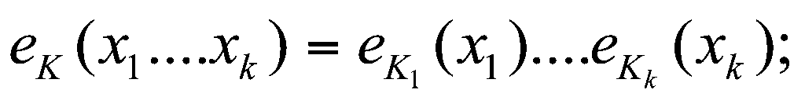 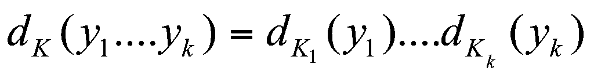
Gi¶ thö b¶n râ mµ ta muèn lËp mËt m· cho nã lµ d·y ký tù X P * .Ta c¾t X thµnh tõng khèi, mçi khèi cã ®é dµi k, khèi cuèi cïng cã thÓ cã ®é dµi k, ta lu«n cã thÓ gi¶ thiÕt lµ cã thÓ bæ sung vµo phÇn cuèi cña khèi mét sè ký tù qui íc nµo ®ã ®Ó nã còng cã ®é dµi k. Do ®ã ta cã thÓ gi¶ thiÕt X = X1....Xm , trong ®ã mçi X1,...,Xm lµ mét khèi cã ®é dµi k. Vµ ta ®Þnh nghÜa b¶n mËt m· cña X lµ:
eK(X) = eK(X1....Xm ) = eK(X1)....eK(Xm).
§Æt Y = eK(X1)....eK(Xm), ta cã thÓ viÕt Y = Y1....Ym víi Yi =eK(Xi), vµ do ®ã cã
dK(Y) = dK(Y1)....dK(Ym) = X1....Xm = X.
C¸ch m· theo khèi ®¬n gi¶n vµ th«ng dông nhÊt lµ khi ta chän ®é dµi khèi k =1. Khi ®ã víi mäi b¶n râ X = x1...xm P * ta cã
eK(X) = eK(x1....xm ) = eK(x1)....eK(xm).
Víi c¸ch m· theo dßng (stream cipher), tríc hÕt ta ph¶i x¸c ®Þnh mét dßng khãa, tøc lµ mét phÇn tö K = K1...Km K * , víi dßng khãa ®ã ta x¸c ®Þnh víi mäi b¶n râ X = x1...xm P * b¶n m· t¬ng øng lµ
eK(X)
= 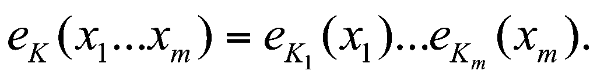
Gi¶i m· Y = eK(X) ta ®îc
dK(Y)
=
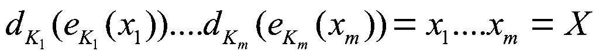


§Ó sö dông c¸ch lËp mËt m· theo dßng, ngoµi s¬ ®å mËt m· gèc ta cßn ph¶i cã mét dßng khãa, tøc lµ mét d·y cã ®é dµi tïy ý c¸c ký tù khãa. §ã thêng lµ c¸c d·y c¸c ký tù khãa ®îc sinh ra bëi mét bé "t¹o d·y ngÉu nhiªn" nµo ®ã xuÊt ph¸t tõ mét "mÇm" chän tríc. Trong c¸c øng dông thùc tÕ, ngêi ta thêng dïng c¸ch m· theo dßng cã s¬ ®å mËt m· gèc lµ s¬ ®å Vernam víi
P = C = K = {0,1}
vµ c¸c hµm lËp m· vµ gi¶i m· ®îc x¸c ®Þnh bëi
eK(x) = x + K mod 2, dK(y) = y +K mod 2 (K = 0 hoÆc 1);
dßng khãa lµ d·y bit ngÉu nhiªn ®îc sinh ra bëi mét bé t¹o d·y bit ngÉu nhiªn nµo ®ã.
1.3. MËt m· khãa ®èi xøng vµ mËt m· cã khãa c«ng khai.
Theo ®Þnh nghÜa 1.2.1 vÒ s¬ ®å mËt m·, cø mçi lÇn truyÒn tin b¶o mËt, c¶ ngêi göi A vµ ngêi nhËn B ph¶i cïng tháa thuËn tríc víi nhau mét khãa chung K, sau ®ã ngêi göi dïng eK ®Ó lËp mËt m· cho th«ng b¸o göi ®i, vµ ngêi nhËn dïng dK ®Ó gi¶i m· b¶n mËt m· nhËn ®îc. Ngêi göi vµ ngêi nhËn cïng cã mét khãa chung K, ®îc gi÷ nh bÝ mËt riªng cña hai ngêi, dïng c¶ cho lËp mËt m· vµ gi¶i m·, ta gäi nh÷ng hÖ mËt m· víi c¸ch sö dông ®ã lµ mËt m· khãa ®èi xøng, ®«i khi còng gäi lµ mËt m· truyÒn thèng, v× ®ã lµ c¸ch ®· ®îc sö dông tõ hµng ngµn n¨m nay.
Tuy nhiªn, vÒ nguyªn t¾c hai hµm lËp m· vµ gi¶i m· lµ kh¸c nhau, kh«ng nhÊt thiÕt ph¶i phô thuéc cïng mét khãa. NÕu ta x¸c ®Þnh mçi khãa K gåm cã hai phÇn K = (K' , K'' ), K' dµnh cho viÖc lËp mËt m· (vµ ta cã hµm lËp m· eK' ), K'' dµnh cho viÖc gi¶i m· (vµ cã hµm gi¶i m· dK'' ), c¸c hµm lËp m· vµ gi¶i m· tháa m·n hÖ thøc
dK'' (eK' (x)) = x víi mäi x P ,
th× ta ®îc mét hÖ mËt m· khãa phi ®èi xøng. Nh vËy, trong mét hÖ mËt m· khãa phi ®èi xøng, c¸c khãa lËp m· vµ gi¶i m· (K' vµ K'' ) lµ kh¸c nhau, nhng tÊt nhiªn cã quan hÖ víi nhau. Trong hai khãa ®ã, khãa cÇn ph¶i gi÷ bÝ mËt lµ khãa gi¶i m· K'' , cßn khãa lËp m· K' cã thÓ ®îc c«ng bè c«ng khai; tuy nhiªn ®iÒu ®ã chØ cã ý nghÜa thùc tiÔn khi viÖc biÕt K' t×m K'' lµ cùc kú khã kh¨n ®Õn møc hÇu nh kh«ng thÓ thùc hiÖn ®îc. Mét hÖ mËt m· khãa phi ®èi xøng cã tÝnh chÊt nãi trªn, trong ®ã khãa lËp mËt m· K' cña mçi ngêi tham gia ®Òu ®îc c«ng bè c«ng khai, ®îc gäi lµ hÖ mËt m· khãa c«ng khai. Kh¸i niÖm mËt m· khãa c«ng khai míi ®îc ra ®êi vµo gi÷a nh÷ng n¨m 1970, vµ ngay sau ®ã ®· trë thµnh mét kh¸i niÖm trung t©m cña khoa häc mËt m· hiÖn ®¹i. Ta sÏ dµnh phÇn lín néi dung gi¸o tr×nh nµy cho c¸c hÖ mËt m· ®ã vµ nh÷ng øng dông cña chóng vµo c¸c vÊn ®Ò an toµn th«ng tin.
1.4. C¸c bµi to¸n vÒ an toµn th«ng tin.
Chóng ta ®ang sèng trong mét thêi ®¹i bïng næ th«ng tin. Nhu cÇu trao ®æi th«ng tin vµ c¸c ph¬ng tiÖn truyÒn ®a th«ng tin ph¸t triÓn mét c¸ch nhanh chãng. Vµ cïng víi sù ph¸t triÓn ®ã, ®ßi hái b¶o vÖ tÝnh bÝ mËt vµ an toµn cña th«ng tin còng cµng ngµy cµng to lín vµ cã tÝnh phæ biÕn. Cã nhiÒu bµi to¸n kh¸c nhau vÒ yªu cÇu an toµn th«ng tin tïy theo nh÷ng t×nh huèng kh¸c nhau, nhng tùu trung cã mét sè bµi to¸n chung nhÊt mµ ta thêng gÆp trong thùc tiÔn lµ nh÷ng bµi to¸n sau ®©y:
- b¶o mËt : gi÷ th«ng tin ®îc bÝ mËt ®èi víi tÊt c¶ mäi ngêi, trõ mét Ýt ngêi cã thÈm quyÒn ®îc ®äc, biÕt th«ng tin ®ã;
- toµn vÑn th«ng tin : b¶o ®¶m th«ng tin kh«ng bÞ thay ®æi hay xuyªn t¹c bëi nh÷ng kÎ kh«ng cã thÈm quyÒn hoÆc b»ng nh÷ng ph¬ng tiÖn kh«ng ®îc phÐp;
- nhËn thùc mét thùc thÓ : x¸c nhËn danh tÝnh cña mét thùc thÓ, ch¼ng h¹n mét ngêi, mét m¸y tÝnh cuèi trong m¹ng, mét thÎ tÝn dông,... ;
- nhËn thùc mét th«ng b¸o : x¸c nhËn nguån gèc cña mét th«ng b¸o ®îc göi ®Õn ;
- ch÷ ký : mét c¸ch ®Ó g¾n kÕt mét th«ng tin víi mét thùc thÓ, thêng dïng trong bµi to¸n nhËn thùc mét th«ng b¸o còng nh trong nhiÒu bµi to¸n nhËn thùc kh¸c ;
- ñy quyÒn : chuyÓn cho mét thùc thÓ kh¸c quyÒn ®îc ®¹i diÖn hoÆc ®îc lµm mét viÖc g× ®ã ;
- cÊp chøng chØ : cÊp mét sù x¸c nhËn th«ng tin bëi mét thùc thÓ ®îc tÝn nhiÖm ;
- b¸o nhËn : x¸c nhËn mét th«ng b¸o ®· ®îc nhËn hay mét dÞch vô ®· ®îc thùc hiÖn ;
- lµm chøng : kiÓm thö viÖc tån t¹i mét th«ng tin ë mét thùc thÓ kh¸c víi ngêi chñ së h÷u th«ng tin ®ã ;
- kh«ng chèi bá ®îc : ng¨n ngõa viÖc chèi bá tr¸ch nhiÖm ®èi víi mét cam kÕt ®· cã (thÝ dô ®· ký vµo mét v¨n b¶n) ;
- Èn danh : che giÊu danh tÝnh cña mét thùc thÓ tham gia trong mét tiÕn tr×nh nµo ®ã (thêng dïng trong giao dÞch tiÒn ®iÖn tö) ;
- thu håi : rót l¹i mét giÊy chøng chØ hay ñy quyÒn ®· cÊp;
- v©n v©n........
C¬ së cña c¸c gi¶i ph¸p cho c¸c bµi to¸n kÓ trªn lµ c¸c ph¬ng ph¸p mËt m·, ®Æc biÖt lµ mËt m· khãa c«ng khai, ta sÏ xem xÐt kü mét vµi bµi to¸n ®ã trong c¸c ch¬ng tiÕp theo.
1.5. Th¸m m· vµ tÝnh an toµn cña c¸c hÖ mËt m·.
1.5.1. VÊn ®Ò th¸m m·.
MËt m· ®îc sö dông tríc hÕt lµ ®Ó b¶o ®¶m tÝnh bÝ mËt cho c¸c th«ng tin ®îc trao ®æi, vµ do ®ã bµi to¸n quan träng nhÊt cña th¸m m· còng lµ bµi to¸n ph¸ bá tÝnh bÝ mËt ®ã, tøc lµ tõ b¶n mËt m· cã thÓ thu ®îc dÔ dµng (trªn c¸c kªnh truyÒn tin c«ng céng) ngêi th¸m m· ph¶i ph¸t hiÖn ®îc néi dung th«ng tin bÞ che giÊu trong b¶n mËt m· ®ã, mµ tèt nhÊt lµ t×m ra ®îc b¶n râ gèc cña b¶n mËt m· ®ã. T×nh huèng thêng gÆp lµ b¶n th©n s¬ ®å hÖ thèng mËt m·, kÓ c¶ c¸c phÐp lËp m· vµ gi¶i m· (tøc c¸c thuËt to¸n E vµ D ), kh«ng nhÊt thiÕt lµ bÝ mËt, do ®ã bµi to¸n qui vÒ viÖc t×m ch×a khãa mËt m· K, hay ch×a khãa gi¶i m· K'', nÕu hÖ mËt m· cã khãa phi ®èi xøng. Nh vËy, ta cã thÓ qui íc xem bµi to¸n th¸m m· c¬ b¶n lµ bµi to¸n t×m khãa mËt m· K (hay khãa gi¶i m· K''). §Ó gi¶i bµi to¸n ®ã, gi¶ thiÕt ngêi th¸m m· biÕt th«ng tin vÒ s¬ ®å hÖ mËt m· ®îc dïng, kÓ c¶ c¸c phÐp lËp m· vµ gi¶i m· tæng qu¸t E vµ D . Ngoµi ra, ngêi th¸m m· cã thÓ biÕt thªm mét sè th«ng tin kh¸c, tïy theo nh÷ng th«ng tin ®îc biÕt thªm nµy mµ ta cã thÓ ph©n lo¹i bµi to¸n th¸m m· thµnh c¸c bµi to¸n cô thÓ nh sau:
- bµi to¸n th¸m m· chØ biÕt b¶n m· : lµ bµi to¸n phæ biÕn nhÊt, khi ngêi th¸m m· chØ biÕt mét b¶n mËt m· Y;
- bµi to¸n th¸m m· khi biÕt c¶ b¶n râ : ngêi th¸m m· biÕt mét b¶n mËt m· Y cïng víi b¶n râ t¬ng øng X;
- bµi to¸n th¸m m· khi cã b¶n râ ®îc chän : ngêi th¸m m· cã thÓ chän mét b¶n râ X, vµ biÕt b¶n mËt m· t¬ng øng Y . §iÒu nµy cã thÓ xÈy ra khi ngêi th¸m m· chiÕm ®îc (t¹m thêi) m¸y lËp m·;
- bµi to¸n th¸m m· khi cã b¶n m· ®îc chän : ngêi th¸m m· cã thÓ chän mét b¶n mËt m· Y, vµ biÕt b¶n râ t¬ng øng X. §iÒu nµy cã thÓ xÈy ra khi ngêi th¸m m· chiÕm ®îc t¹m thêi m¸y gi¶i m·.
1.5.2. TÝnh an toµn cña mét hÖ mËt m·.
TÝnh an toµn cña mét hÖ thèng mËt m· phô thuéc vµo ®é khã kh¨n cña bµi to¸n th¸m m· khi sö dông hÖ mËt m· ®ã. Ngêi ta ®· ®Ò xuÊt mét sè c¸ch hiÓu cho kh¸i niÖm an toµn cña hÖ thèng mËt m·, ®Ó trªn c¬ së c¸c c¸ch hiÓu ®ã nghiªn cøu tÝnh an toµn cña nhiÒu hÖ mËt m· kh¸c nhau, sau ®©y ta giíi thiÖu vµi c¸ch hiÓu th«ng dông nhÊt:
- An toµn v« ®iÒu kiÖn : gi¶ thiÕt ngêi th¸m m· cã ®îc th«ng tin vÒ b¶n m·. Theo quan niÖm lý thuyÕt th«ng tin, nÕu nh÷ng hiÓu biÕt vÒ b¶n m· kh«ng thu hÑp ®îc ®é bÊt ®Þnh vÒ b¶n râ ®èi víi ngêi th¸m m·, th× hÖ mËt m· lµ an toµn v« ®iÒu kiÖn, hay theo thuËt ng÷ cña C. Shannon, hÖ lµ bÝ mËt hoµn toµn. Nh vËy, hÖ lµ an toµn v« ®iÒu kiÖn, nÕu ®é bÊt ®Þnh vÒ b¶n râ sau khi ngêi th¸m m· cã ®îc c¸c th«ng tin (vÒ b¶n m·) b»ng ®é bÊt ®Þnh vÒ b¶n râ tríc ®ã. TÝnh an toµn v« ®iÒu kiÖn ®· ®îc nghiªn cøu cho mét sè hÖ mËt m· khãa ®èi xøng mµ ta sÏ tr×nh bµy trong ch¬ng 3.
- An toµn ®îc chøng minh : mét hÖ thèng mËt m· ®îc xem lµ cã ®é an toµn ®îc chøng minh nÕu ta cã thÓ chøng minh ®îc lµ bµi to¸n th¸m m· ®èi víi hÖ thèng ®ã khã t¬ng ®¬ng víi mét bµi to¸n khã ®· biÕt, thÝ dô bµi to¸n ph©n tÝch mét sè nguyªn thµnh tÝch c¸c thõa sè nguyªn tè, bµi to¸n t×m l«garit rêi r¹c theo mét m«®uyn nguyªn tè, v.v... (khã t¬ng ®¬ng cã nghÜa lµ nÕu bµi to¸n nµy gi¶i ®îc th× bµi to¸n kia còng gi¶i ®îc víi cïng mét ®é phøc t¹p nh nhau).
- An toµn tÝnh to¸n : hÖ mËt m· ®îc xem lµ an toµn (vÒ mÆt) tÝnh to¸n, nÕu mäi ph¬ng ph¸p th¸m m· ®· biÕt ®Òu ®ßi hái mét nguån n¨ng lùc tÝnh to¸n vît mäi kh¶ n¨ng (kÓ c¶ ph¬ng tiÖn thiÕt bÞ) tÝnh to¸n cña mét kÎ thï gi¶ ®Þnh. An toµn theo nghÜa nµy, nãi theo ng«n ng÷ cña lý thuyÕt vÒ ®é phøc t¹p tÝnh to¸n, lµ bao hµm c¶ kh¸i niÖm an toµn theo nghia "®îc chøng minh" nãi trªn.
TÝnh an toµn theo nghÜa ®îc chøng minh hay tÝnh to¸n ®îc sö dông nhiÒu trong viÖc nghiªn cøu c¸c hÖ thèng mËt m· hiÖn ®¹i, ®Æc biÖt lµ c¸c hÖ thèng mËt m· khãa c«ng khai, ta sÏ tr×nh bµy riªng cho tõng hÖ mËt m· ®îc tr×nh bµy trong c¸c ch¬ng vÒ sau. ë môc 1,4 ta ®· giíi thiÖu mét sè bµi to¸n vÒ an toµn th«ng tin nãi chung. C¸c bµi to¸n ®ã ®Òu cã h¹t nh©n lµ tÝnh an toµn cña mét hÖ mËt m· nµo ®ã, cho nªn viÖc nghiªn cøu tÝnh an toµn cña c¸c hÖ mËt m· còng gãp phÇn gi¶i quyÕt c¸c vÊn ®Ò an toµn th«ng tin kÓ trªn.
CH¦¥NG II
C¬ së to¸n häc cña lý
thuyÕt mËt m·
2.1. Sè häc c¸c sè nguyªn. ThuËt to¸n Euclide.
Ta ký hiÖu Z lµ tËp hîp c¸c sè nguyªn, Z = {.....,-2,-1,0,1,2,....},
vµ Z + lµ tËp hîp c¸c sè nguyªn kh«ng ©m, Z += {0,1,2,.....}. Trong môc nµy ta sÏ nh¾c l¹i mét sè kiÕn thøc vÒ sè häc cña c¸c sè nguyªn cÇn cho viÖc tr×nh bµy lý thuyÕt mËt m·. V× ®Ó tËp gi¸o tr×nh kh«ng qu¸ dµi dßng, c¸c kiÕn thøc sÏ ®îc nh¾c ®Õn chñ yÕu lµ c¸c kh¸i niÖm, c¸c mÖnh ®Ò sÏ ®îc sö dông, v.v..., cßn c¸c phÇn chøng minh sÏ ®îc lîc bá, b¹n ®äc nµo muèn t×m hiÓu kü h¬n cã thÓ tham kh¶o c¸c s¸ch chuyªn vÒ Sè häc.
2.1.1. TÝnh chia hÕt cña c¸c sè nguyªn.
TËp hîp Z lµ ®ãng kÝn ®èi víi c¸c phÐp céng, trõ vµ nh©n, nhng kh«ng ®ãng kÝn ®èi víi phÐp chia: chia mét sè nguyªn cho mét sè nguyªn kh«ng ph¶i bao giê còng ®îc kÕt qu¶ lµ mét sè nguyªn! V× vËy, trêng hîp chia hÕt, tøc khi chia sè nguyªn a cho sè nguyªn b ®îc th¬ng lµ mét sè nguyªn q , a = b.q, cã mét ý nghÜa ®Æc biÖt. Khi ®ã, ta nãi a chia hÕt cho b, b chia hÕt a, a lµ béi sè cña b, b lµ íc sè cña a, vµ ký hiÖu lµ ba. DÔ thÊy ngay r»ng sè 1 lµ íc sè cña mäi sè nguyªn bÊt kú, sè 0 lµ béi sè cña mäi sè nguyªn bÊt kú, mäi sè nguyªn a lµ íc sè, ®ång thêi lµ béi sè, cña chÝnh nã.
Cho hai sè nguyªn bÊt kú a vµ b , b 1. Thùc hiÖn phÐp chia a cho b ta sÏ ®îc hai sè q vµ r sao cho
a = b.q + r , 0 r b .
Sè q ®îc gäi lµ sè th¬ng cña phÐp chia a cho b, ký hiÖu a divb, vµ sè r ®îc gäi lµ sè d cña phÐp chia a cho b, ký hiÖu a modb. ThÝ dô: 25 div 7 = 3 vµ 25 mod 7 = 4, -25 div 7 = -4 vµ -25 mod 7 = 3.
Mét sè nguyªn d ®îc gäi lµ íc sè chung cña hai sè nguyªn a vµ b nÕu d a vµ d b. Sè nguyªn d ®îc gäi lµ íc sè chung lín nhÊt cña a vµ b nÕu d 0, d lµ íc sè chung cña a vµ b, vµ mäi íc sè chung cña a vµ b ®Òu lµ íc sè cña d . Ta ký hiÖu íc sè chung lín nhÊt cña a vµ b lµ gcd(a,b). ThÝ dô gcd(12,18) = 6, gcd(-18, 27) = 3.
DÔ thÊy r»ng víi mäi sè nguyªn d¬ng a ta cã gcd(a,0) = a , ta còng sÏ qui íc xem r»ng gcd(0, 0) = 0.
Mét sè nguyªn a 1 ®îc gäi lµ sè nguyªn tè, nÕu a kh«ng cã íc sè nµo ngoµi 1 vµ chÝnh a ; vµ ®îc gäi lµ hîp sè , nÕu kh«ng ph¶i lµ nguyªn tè. ThÝ dô c¸c sè 2 ,3 , 5, 7 lµ sè nguyªn tè; c¸c sè 4, 6, 8, 10, 12, 14, 15 lµ hîp sè. Hai sè a vµ b ®îc gäi lµ nguyªn tè víi nhau, nÕu chóng kh«ng cã íc sè chung nµo kh¸c 1, tøc lµ nÕu gcd(a,b) = 1. Mét sè nguyªn n > 1 bÊt kú ®Òu cã thÓ viÕt díi d¹ng:
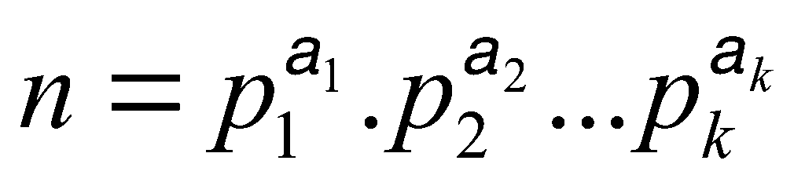
trong ®ã p1 , p2 ,..., pk lµ c¸c sè nguyªn tè kh¸c nhau, 1 , 2 ,..., k lµ c¸c sè mò nguyªn d¬ng. NÕu kh«ng kÓ thø tù c¸c thõa sè nguyªn tè, th× d¹ng biÓu diÔn ®ã lµ duy nhÊt, ta gäi ®ã lµ d¹ng khai triÓn chÝnh t¾c cña n . ThÝ dô d¹ng khai triÓn chÝnh t¾c cña 1800 lµ 233252.
C¸c sè nguyªn tè vµ c¸c vÊn ®Ò vÒ sè nguyªn tè cã mét vai trß quan träng trong sè häc vµ trong øng dông vµo lý thuyÕt mËt m·, ta sÏ xÐt riªng trong mét môc sau.
§Þnh lý 2.1.1. NÕu b 0 vµ b a th× gcd(a ,b) = b.
NÕu a = bq + r th× gcd(a,b) = gcd(b,r).
Mét sè nguyªn m ®îc gäi lµ béi sè chung cña a vµ b nÕu a m vµ bm. Sè m ®îc gäi lµ béi sè chung bÐ nhÊt cña a vµ b , vµ ®îc ký hiÖu lµ lcm(a ,b), nÕu m 0, m lµ béi sè chung cña a vµ b , vµ mäi béi sè chung cña a vµ b ®Òu lµ béi cña m . ThÝ dô lcm(14,21) = 42.
Víi hai sè nguyªn d¬ng a vµ b bÊt kú ta cã quan hÖ
lcm(a,b).gcd(a,b) = a.b.
Tõ ®Þnh lý 2.1.1 ta suy ra thuËt to¸n sau ®©y thùc hiÖn viÖc t×m íc sè chung lín nhÊt cña hai sè nguyªn bÊt kú:
ThuËt to¸n Euclide t×m íc sè chung lín nhÊt :
INPUT: hai sè nguyªn kh«ng ©m a vµ b , víi a b .
OUTPUT: íc sè chung lín nhÊt cña a vµ b.
1. Trong khi cßn b 0, thùc hiÖn:
1.1. ®Æt r a modb , a b , b r.
2. Cho ra kÕt qu¶ (a).
ThÝ dô: Dïng thuËt to¸n Euclide t×m gcd( 4864, 3458), ta lÇn lît ®îc c¸c gi¸ trÞ g¸n cho c¸c biÕn a, b vµ r nh sau:
a |
b |
r |
4864 3458 1406 646 114 76 38 |
3458 1406 646 114 76 38 0 |
1406 646 114 76 38 0 |
4864 = 1. 3458 + 1406
3458 = 2. 1406 + 646
1406 = 2. 646 + 114
646 = 5. 114 + 76
114 = 1. 76 + 38
76 = 2. 38 + 0
Vµ thuËt to¸n cho ta kÕt qu¶: gcd(4864, 3458) = 38.
Ta biÕt r»ng nÕu gcd(a,b) = d, th× ph¬ng tr×nh bÊt ®Þnh
a.x + b.y = d
cã nghiÖm nguyªn (x,y), vµ mét nghiÖm nguyªn (x,y) nh vËy cã thÓ t×m ®îc bëi thuËt to¸n Euclide më réng nh sau:
ThuËt to¸n Euclide më réng :
INPUT: hai sè nguyªn kh«ng ©m a vµ b víi a b.
OUTPUT: d = gcd(a,b) vµ hai sè x,y sao cho a.x + b.y = d.
NÕu b = 0 th× ®Æt d a , x 1, y 0, vµ cho ra (d,x,y).
§Æt x2 1, x1 0 , y2 0 , y1 1.
Trong khi cßn b 0, thùc hiÖn:
3.1. qa divb, r a modb , x x2 qx1 , y y2 qy1.
a b, b r , x2 x1 , x1 x , y2 y1 vµ y1y.
§Æt d a, x x2 , y y2 , vµ cho ra kÕt qu¶ (d,x,y).
ThÝ dô: Dïng thuËt to¸n Euclide më réng cho c¸c sè a 4864 vµ b 3458, ta lÇn lît ®îc c¸c gi¸ trÞ sau ®©y cho c¸c biÕn a, b, q, r, x, y, x1 , x2 , y1 , y2 (sau mçi chu tr×nh thùc hiÖn hai lÖnh 3.1 vµ 3.2) :
a |
b |
q |
r |
x |
y |
x1 |
x2 |
y1 |
y2 |
4864 |
3458 |
|
|
|
|
0 |
1 |
1 |
0 |
3458 |
1406 |
1 |
1406 |
1 |
-1 |
1 |
0 |
-1 |
1 |
1406 |
646 |
2 |
646 |
-2 |
3 |
-2 |
1 |
3 |
-1 |
646 |
114 |
2 |
114 |
5 |
-7 |
5 |
-2 |
-7 |
3 |
114 |
76 |
5 |
76 |
-27 |
38 |
-27 |
5 |
38 |
-7 |
76 |
38 |
1 |
38 |
32 |
-45 |
32 |
-27 |
-45 |
38 |
38 |
0 |
2 |
0 |
-91 |
128 |
-91 |
32 |
128 |
-45 |
Ta dÔ thö l¹i r»ng sau mçi lÇn thùc hiÖn chu tr×nh gåm hai lÖnh 3.1 vµ 3.2, c¸c gi¸ trÞ x,y,r thu ®îc lu«n tho¶ m·n 4864.x 3458.y r , vµ do ®ã khi kÕt thóc c¸c vßng lÆp (øng víi gi¸ trÞ b 0), thùc hiÖn tiÕp lÖnh 4 ta ®îc kÕt qu¶ d 38, x 32 vµ y -45, cÆp sè (32,-45) tho¶ m·n: 4864.32 3458. (-45) 38.
2.1.2. §ång d vµ ph¬ng tr×nh ®ång d tuyÕn tÝnh.
Cho n lµ mét sè nguyªn d¬ng. Ta nãi hai sè nguyªn a vµ b lµ ®ång d víi nhau theo m«®uyn n , vµ viÕt a b (modn ), nÕu n ab (tøc còng lµ nÕu a b chia hÕt cho n , hay khi chia a vµ b cho n ta ®îc cïng mét sè d nh nhau).
Quan hÖ ®ång d (theo mét m«®uyn n ) trªn tËp hîp c¸c sè nguyªn cã c¸c tÝnh chÊt ph¶n x¹, ®èi xøng vµ b¾c cÇu,tøc lµ mét quan hÖ t¬ng ®¬ng, do ®ã nã t¹o ra mét ph©n ho¹ch trªn tËp hîp tÊt c¶ c¸c sè nguyªn Z thµnh ra c¸c líp t¬ng ®¬ng: hai sè nguyªn thuéc cïng mét líp t¬ng ®¬ng khi vµ chØ khi chóng cho cïng mét sè d nÕu chia cho n. Mçi líp t¬ng ®¬ng nh vËy ®îc ®¹i diÖn bëi mét sè duy nhÊt trong tËp hîp Zn = {0, 1, 2, 3,...., n -1}, lµ sè d chung khi chia c¸c sè trong líp ®ã cho n. V× vËy, ta cã thÓ ®ång nhÊt Zn víi tËp hîp tÊt c¶ c¸c líp t¬ng ®¬ng c¸c sè nguyªn theo modn ; trªn tËp ®ã ta cã thÓ x¸c ®Þnh c¸c phÐp tÝnh céng, trõ vµ nh©n theo modn.
ThÝ dô: Z25 = {0, 1, 2, ..., 24}. Trong Z25 , 15 14 = 4, v× 15 14 = 29 4 (mod 25). T¬ng tù, 15.14 = 10 trong Z25 .
Cho a Zn . Mét sè nguyªn x Zn ®îc gäi lµ nghÞch ®¶o cña a theo mod n , nÕu a.x 1 (modn). NÕu cã sè x nh vËy th× ta nãi a lµ kh¶ nghÞch, vµ ký hiÖu x lµ a-1modn. ThÝ dô 22-1 mod25 = 8, v× 22 .8 176 1 (mod25). Tõ ®Þnh nghÜa ta cã thÓ suy ra r»ng a lµ kh¶ nghÞch theo modn khi vµ chØ khi gcd(a,n ) = 1, tøc lµ khi a vµ n nguyªn tè víi nhau.
Ta ®Þnh nghÜa phÐp chia trong Zn nh sau:
a : b (mod n) a.b-1 modn.
PhÐp chia chØ thùc hiÖn ®îc khi b lµ kh¶ nghÞch theo modn. ThÝ dô 15 : 22 (mod25) 15.22-1mod 25 20.
B©y giê ta xÐt c¸c ph¬ng tr×nh ®ång d tuyÕn tÝnh.
a.x b (modn ), (1)
trong ®ã a, b, n lµ c¸c sè nguyªn, n 0, x lµ Èn sè. Ph¬ng tr×nh ®ã cã nghiÖm khi vµ chØ khi d = gcd(a,n )b, vµ khi ®ã nã cã ®óng d nghiÖm theo modn. Thùc vËy, ®Æt a ‘ a/d , b’ b/d , n’ n/d , ta thÊy ph¬ng tr×nh ®ång d (1) t¬ng ®¬ng víi ph¬ng tr×nh
a’.x b’ (modn’ ),
V× gcd(a’,n’ ) = 1, nªn ph¬ng tr×nh nµy cã mét nghiÖm theo modn’ :
x x0 b’.a’ -1 (modn’ ),
vµ do ®ã ph¬ng tr×nh (1) cã d nghiÖm theo modn lµ :
x = x0 , x0 n’, .... , x0 (d 1)n’ (modn).
TÊt c¶ d nghiÖm ®ã kh¸c nhau theo modn , nhng cïng ®ång d víi nhau theo modn’.
B©y
giê ta xÐt hÖ thèng c¸c ph¬ng tr×nh ®ång d tuyÕn
tÝnh. Mét hÖ nh vËy cã thÓ ®a vÒ d¹ng
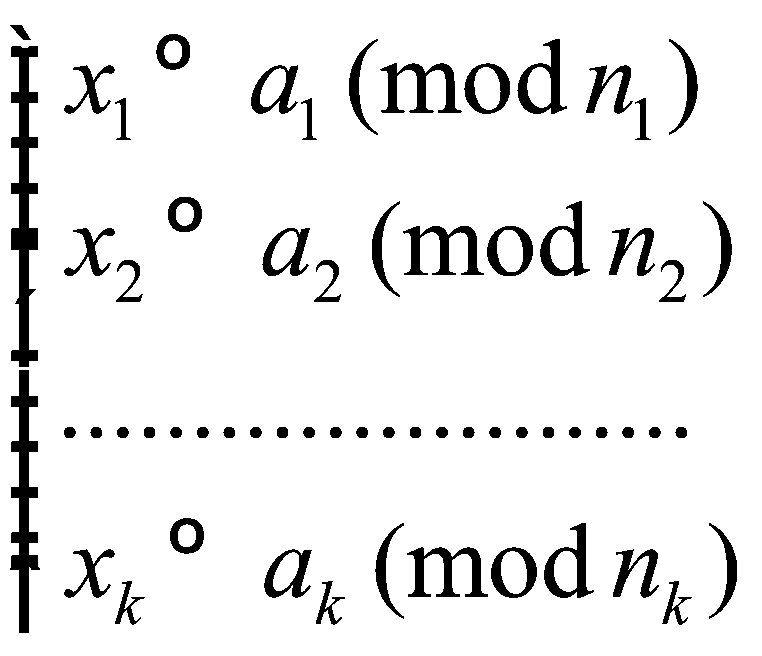
Ta ký hiÖu: n = n1.n2....nk , Ni = n/ni . Ta cã ®Þnh lý sau ®©y:
§Þnh lý 2.2.1 (®Þnh lý sè d Trung quèc). Gi¶ sö c¸c sè nguyªn n1, n2,....,nk lµ tõng cÆp nguyªn tè víi nhau. Khi ®ã, hÖ ph¬ng tr×nh ®ång d tuyÕn tÝnh (2) cã mét nghiÖm duy nhÊt theo modn.
NghiÖm duy nhÊt nãi trong ®Þnh lý 2.2.1 ®îc cho bëi biÓu thøc:
x =
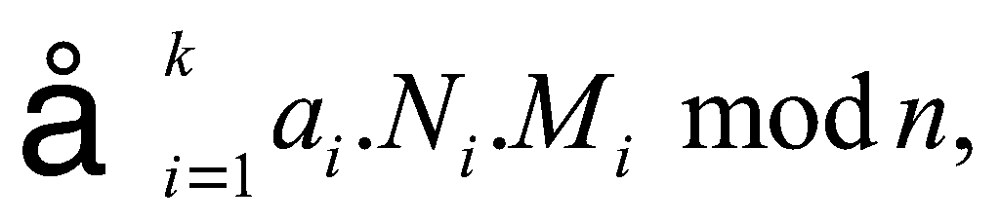
trong ®ã Mi = Ni -1modni (cã Mi v× Ni vµ ni nguyªn tè víi nhau).
ThÝ dô: CÆp ph¬ng tr×nh x 3 (mod7) vµ x 7 (mod13) cã mét nghiÖm duy nhÊt x 59 (mod91).
NÕu (n1 , n2) = 1, th× cÆp ph¬ng tr×nh x a (modn1) vµ x a (modn2) cã nghiÖm duy nhÊt x a (modn) theo modn víi n = n1n2 .
2.1.3.ThÆng d thu gän vµ phÇn tö nguyªn thuû.
TËp Zn = { 0,1,2,..., n 1} thêng ®îc gäi lµ tËp c¸c thÆng d ®Çy ®ñ theo modn, v× mäi sè nguyªn bÊt kú ®Òu cã thÓ t×m ®îc trong Zn mét sè ®ång d víi m×nh (theo modn ). TËp Zn lµ ®ãng ®èi víi c¸c phÐp tÝnh céng, trõ vµ nh©n theo modn , nhng kh«ng ®ãng ®èi víi phÐp chia, v× phÐp chia cho a theo modn chØ cã thÓ thùc hiÖn ®îc khi a vµ n nguyªn tè víi nhau, tøc khi gcd( a ,n ) =1.
B©y giê ta xÐt tËp Zn * = { a Zn gcd( a ,n ) = 1} , tøc Zn * lµ tËp con cña Zn bao gåm tÊt c¶ c¸c phÇn tö nguyªn tè víi n. Ta gäi tËp ®ã lµ tËp c¸c thÆng d thu gän theo modn. Mäi sè nguyªn nguyªn tè víi n ®Òu cã thÓ t×m thÊy trong Zn * mét ®¹i diÖn ®ång d víi m×nh theo modn . Chó ý r»ng nÕu p lµ mét sè nguyªn tè th× Zp * = {1,2,...,p-1}.
TËp Zn * lËp thµnh mét nhãm con ®èi víi phÐp nh©n cña Zn , v× trong Zn * phÐp chia theo modn bao giê còng thùc hiÖn ®îc, ta sÏ gäi Zn * lµ nhãm nh©n cña Zn .
Theo ®¹i sè häc, ta gäi sè c¸c phÇn tö trong mét nhãm lµ cÊp cña nhãm ®ã. Ta ký hiÖu (n) lµ sè c¸c sè nguyªn d¬ng bÐ h¬n n vµ nguyªn tè víi n. Nh vËy, nhãm Zn * cã cÊp (n) , vµ nÕu p lµ sè nguyªn tè th× nhãm Zp * cã cÊp p -1.
Ta nãi mét phÇn tö g Zn * cã cÊp m , nÕu m lµ sè nguyªn d¬ng bÐ nhÊt sao cho gm =1 trong Zn * . Theo mét ®Þnh lý trong §¹i sè, ta cã m (n) . V× vËy, víi mäi b Zn * ta lu«n cã b (n ) 1 modn .
NÕu p lµ sè nguyªn tè, th× do (p) = p 1, ta cã víi mäi b Zp * :
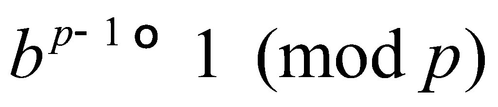
NÕu b cã cÊp p - 1, tøc p - 1 lµ sè mò bÐ nhÊt tho¶ m·n c«ng thøc (3), th× c¸c phÇn tö b, b2,...., b P-1 ®Òu kh¸c nhau vµ theo modp, chóng lËp thµnh Zp * . Theo thuËt ng÷ ®¹i sè, khi ®ã ta nãi Zp * lµ mét nhãm cyclic vµ b lµ mét phÇn tö sinh, hay phÇn tö nguyªn thuû cña nhãm ®ã. Trong lý thuyÕt sè, ngêi ta ®· chøng minh ®îc c¸c tÝnh chÊt sau ®©y cña c¸c phÇn tö nguyªn thuû:
Víi mäi sè nguyªn tè p, Zp * lµ nhãm cyclic, vµ cã (p-1) phÇn tö nguyªn thuû.
NÕu
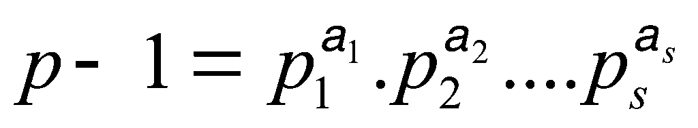
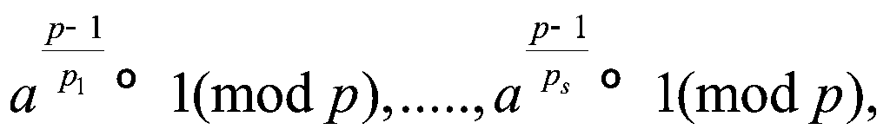
th× a lµ phÇn tö nguyªn thuû theo modp (tøc cña Zp * ).
NÕu g lµ phÇn tö nguyªn thuû theo modp , th× gi modp víi mäi i mµ gcd(i, p -1) = 1, còng lµ phÇn tö nguyªn thuû theo modp .
Ba tÝnh chÊt ®ã lµ c¬ së gióp ta t×m c¸c phÇn tö nguyªn thuû theo modp , víi p lµ sè nguyªn tè bÊt kú. Ngoµi ra, ta còng chó ý mét sè tÝnh chÊt sau ®©y, cã thÓ ®îc sö dông nhiÒu trong c¸c ch¬ng sau:
a) NÕu p lµ sè nguyªn tè vµ gcd(a,p) =1, th× ap -1 1 (modp) (®Þnh lý Fermat ).
b)
NÕu aZn*,
th×
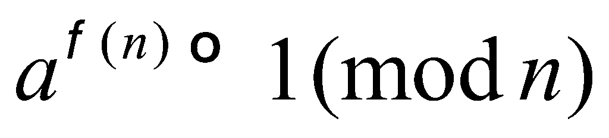 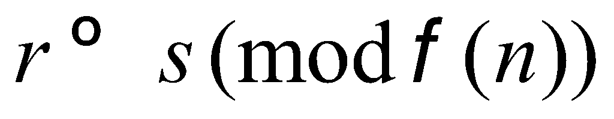 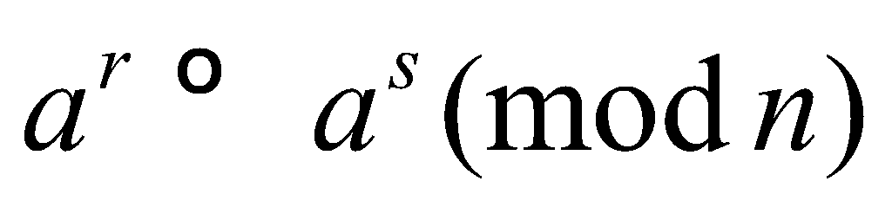
2.1.4. Ph¬ng tr×nh ®ång d bËc hai vµ thÆng d bËc hai.
Ta xÐt ph¬ng tr×nh ®ång d bËc hai cã d¹ng ®¬n gi¶n sau ®©y:
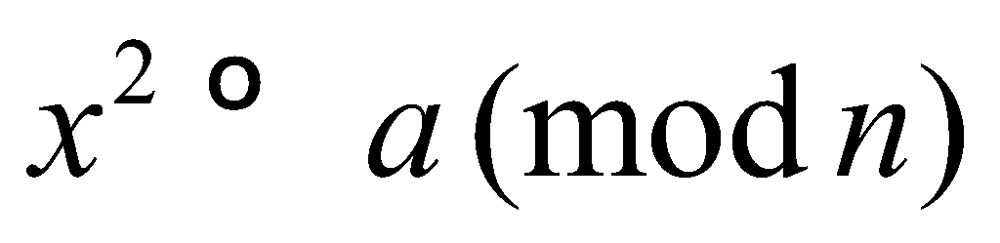
trong
®ã n lµ
mét sè nguyªn d¬ng, a
lµ sè nguyªn víi gcd(a,n)
=1, vµ x
lµ Èn sè. Ph¬ng tr×nh ®ã kh«ng ph¶i bao giê còng cã
nghiÖm, khi nã cã nghiÖm th× ta nãi a
lµ mét thÆng
d bËc hai
modn ;
nÕu kh«ng th× nãi a
lµ mét bÊt thÆng
d bËc hai modn.
TËp c¸c sè nguyªn nguyªn tè víi n
®îc ph©n ho¹ch thµnh hai tËp con: tËp Qn
c¸c thÆng d
bËc hai modn
, vµ tËp 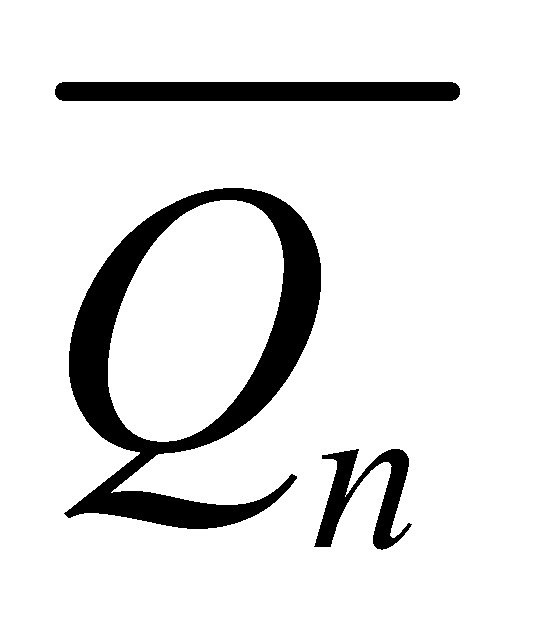
Khi
n =
p lµ sè nguyªn
tè, ta cã tiªu
chuÈn Euler sau
®©y: Sè a lµ
thÆng d bËc hai modp
nÕu vµ chØ nÕu
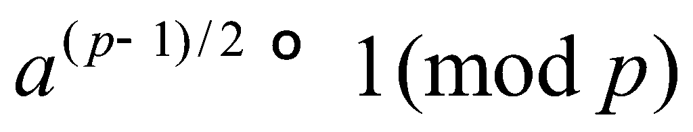
Gi¶
sö cã x
sao cho
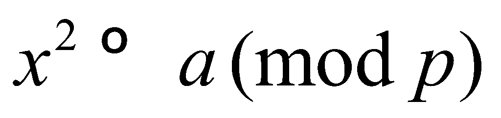
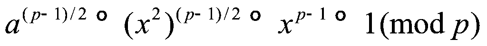
Ngîc
l¹i, gi¶ sö
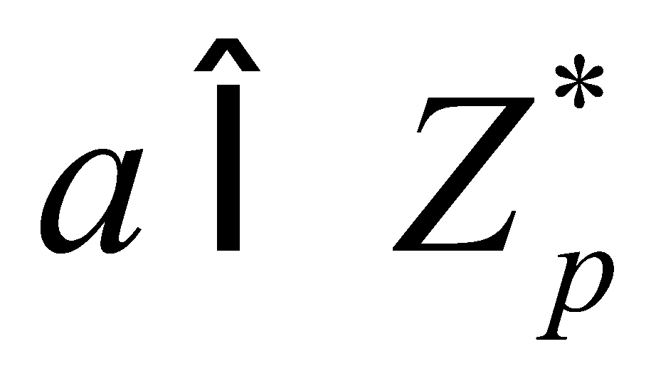 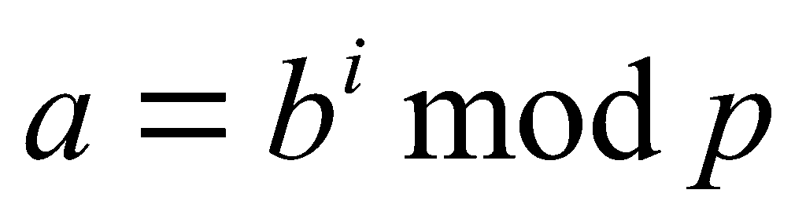 .
Khi ®ã
.
Khi ®ã
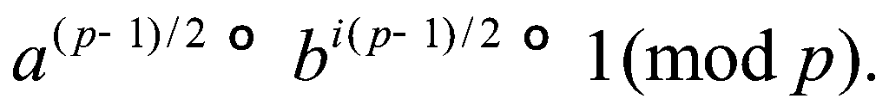
PhÇn tö b cã cÊp p - 1, do ®ã (p - 1) chia hÕt i(p - 1)/2, i ph¶i lµ sè ch½n, i = 2j , vµ a cã c¨n bËc hai lµ b jmodp.
Cho
p lµ
mét sè nguyªn tè lÎ. Víi mäi a
0 ta ®Þnh nghÜa ký
hiÖu Legendre
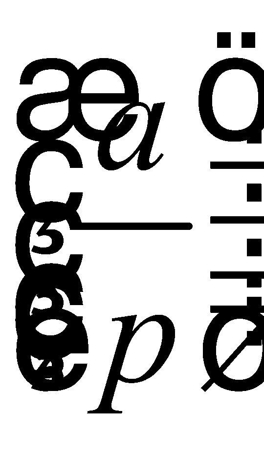
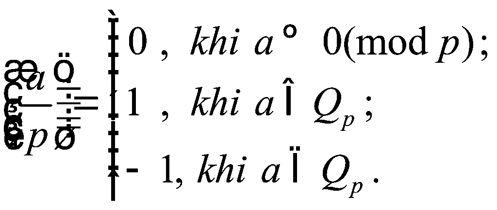
Tõ
®Þnh nghÜa ta suy ra ngay a
lµ thÆng d bËc hai modp khi vµ chØ khi
 =
1. Vµ
theo tiªu chuÈn Euler nãi trªn, víi mäi a
0, ta cã:
=
1. Vµ
theo tiªu chuÈn Euler nãi trªn, víi mäi a
0, ta cã:

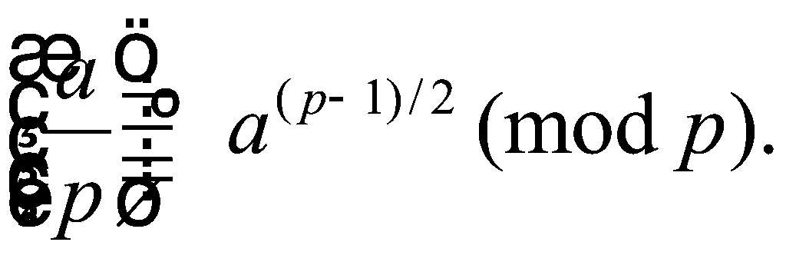
B©y
giê ta më réng ký hiÖu Legendre ®Ó ®îc ký
hiÖu Jacobi
®èi víi mäi sè nguyªn lÎ n
1
vµ mäi sè nguyªn a
0, còng ®îc ký hiÖu bëi
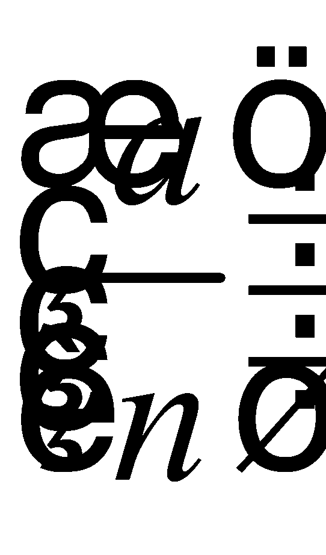 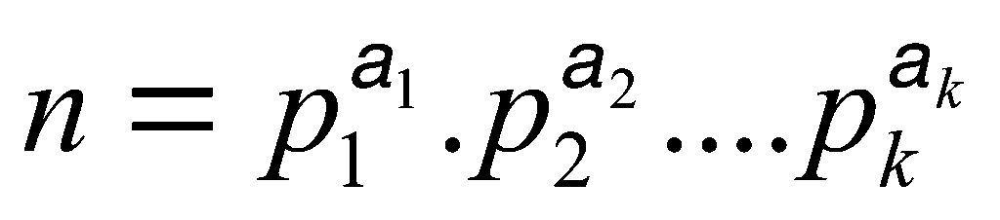
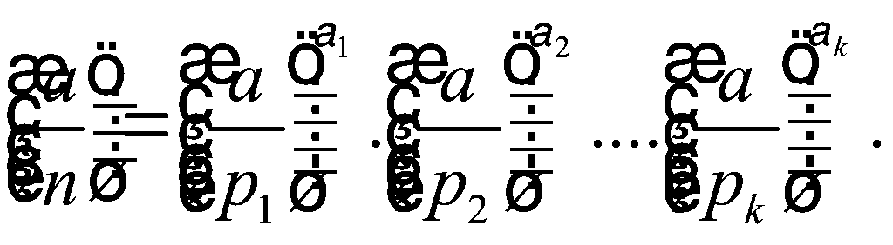
Khi n = p lµ sè nguyªn tè th× gi¸ trÞ cña c¸c ký hiÖu Legendre vµ Jacobi lµ nh nhau. ViÖc tÝnh ký hiÖu Legendre cã thÓ phøc t¹p khi p rÊt lín, trong khi viÖc tÝnh ký hiÖu Jacobi cã thÓ thuËn lîi h¬n do cã thÓ sö dông c¸c tÝnh chÊt 1-4 sau ®©y:
NÕu
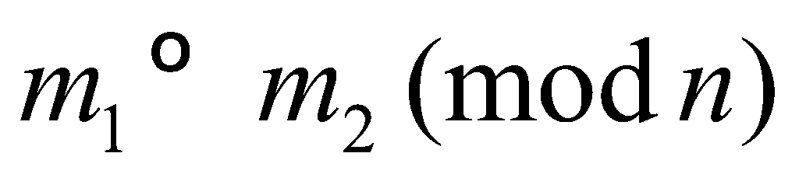 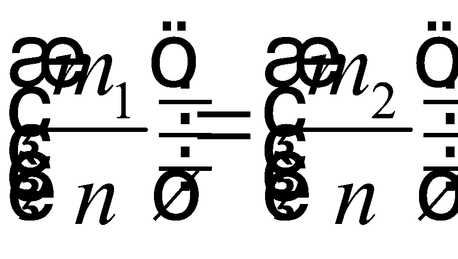
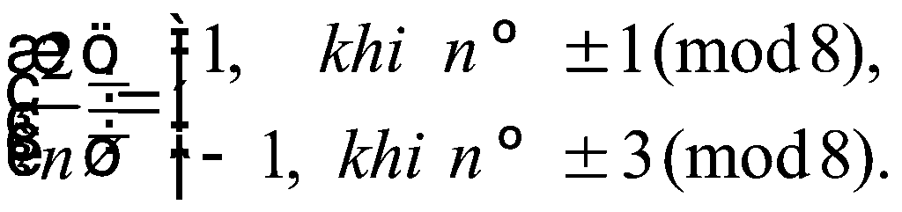
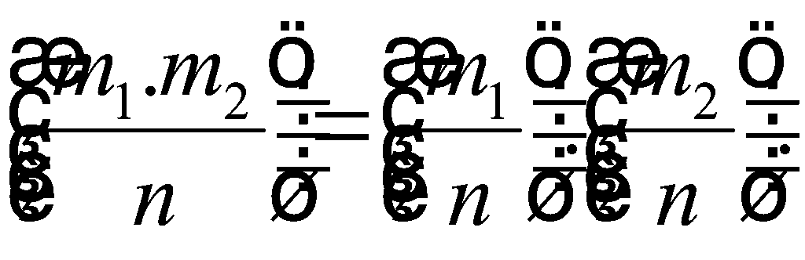
NÕu m vµ n ®Òu lµ sè lÎ, th×
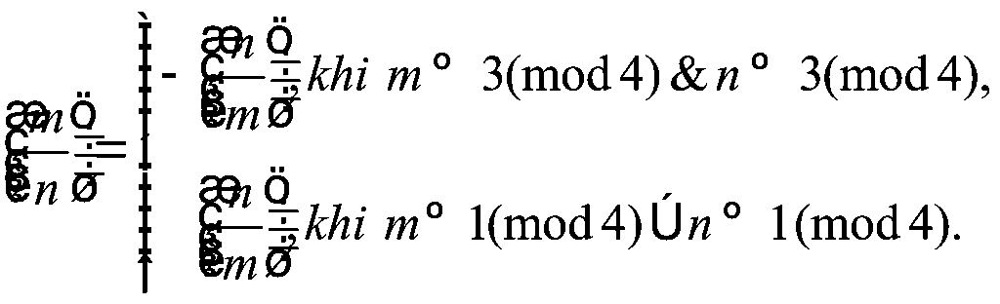
ThÝ dô: Dïng c¸c tÝnh chÊt ®ã, ta tÝnh ®îc:
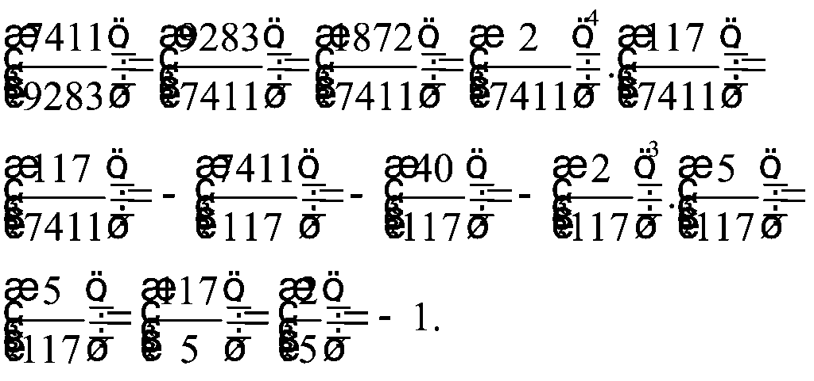
9283
lµ mét sè nguyªn tè. Do ®ã, gi¸ trÞ -1 cña ký hiÖu Jacobi
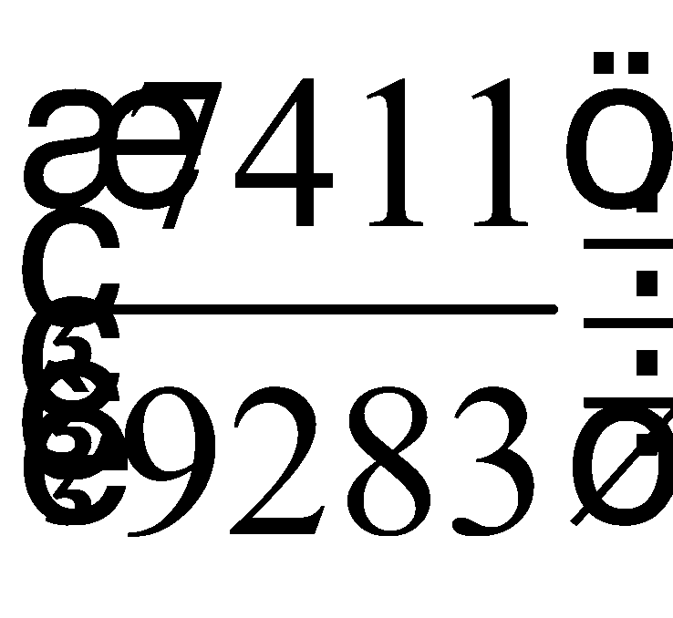
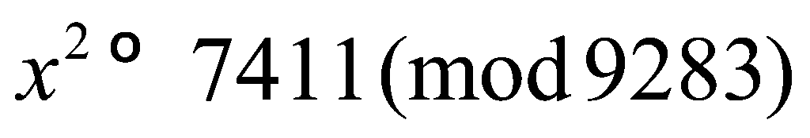
lµ v« nghiÖm.
B©y giê ta xÐt viÖc gi¶i ph¬ng tr×nh ®ång d bËc hai
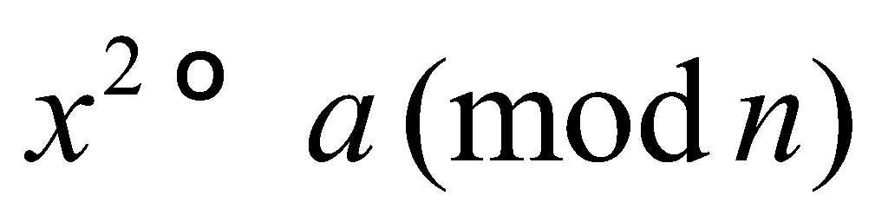
trong
mét trêng hîp ®Æc biÖt khi n
= p
lµ sè nguyªn tè
cã d¹ng p =
4m +3,
tøc p ®ång
d víi 3 theo mod4, vµ a
lµ mét sè nguyªn nguyªn tè víi p.
Theo tiªu chuÈn Euler ta biÕt ph¬ng tr×nh (4) cã nghiÖm
khi vµ chØ khi
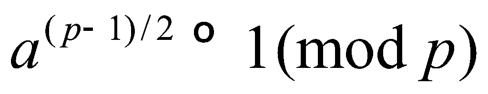
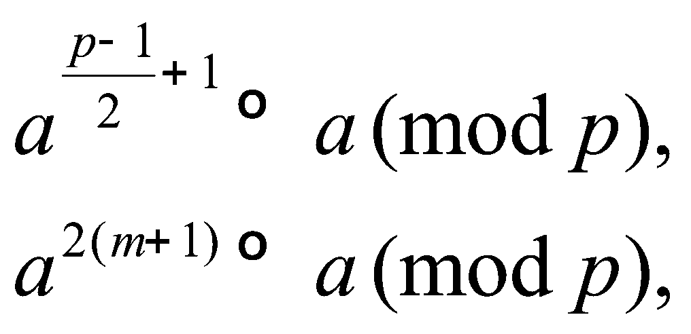
do ®ã x am +1 (modp) lµ hai nghiÖm cña ph¬ng tr×nh (4).
2.2. X¸c suÊt vµ thuËt to¸n x¸c suÊt.
2.2.1. Kh¸i niÖm x¸c suÊt.
Ta
xÐt mét tËp hîp
, ®îc gäi lµ kh«ng
gian c¸c sù kiÖn s¬ cÊp (hay
kh«ng gian mÉu). C¸c phÇn tö cña ,
tøc c¸c sù kiÖn s¬ cÊp hay c¸c mÉu, cã thÓ ®îc xem
nh c¸c kÕt qu¶ cã thÓ cã (vµ lo¹i trõ lÉn nhau) cña
mét thùc nghiÖm nµo ®ã. VÒ sau ta chØ xÐt c¸c kh«ng gian
rêi r¹c, tøc tËp
lµ h÷u h¹n, gi¶ sö
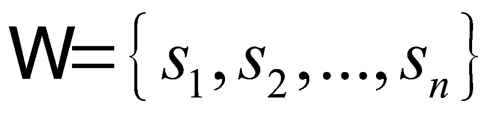
Mét ph©n bè x¸c suÊt P trªn ®îc ®Þnh nghÜa lµ mét tËp c¸c sè thùc kh«ng ©m P = { p1, p2,...,pn} cã tæng pi = 1. Sè pi ®îc coi lµ x¸c suÊt cña sù kiÖn s¬ cÊp si .
Mét
tËp con E
®îc gäi lµ mét sù
kiÖn . X¸c suÊt
cña sù kiÖn E
®îc ®Þnh
nghÜa bëi p
(E
) = 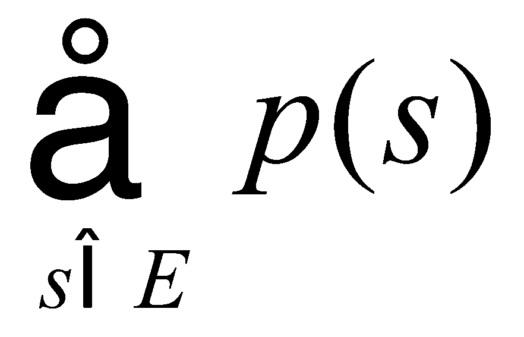
Gi¶
sö E
lµ mét sù kiÖn trong kh«ng gian x¸c suÊt .
Ta ®Þnh nghÜa sù
kiÖn bï cña E,
ký hiÖu 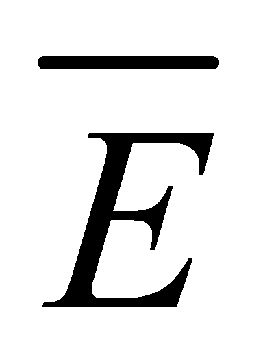
1)
Gi¶ sö E
lµ mét sù kiÖn. Khi ®ã 0
p
(E
)
1 vµ p( 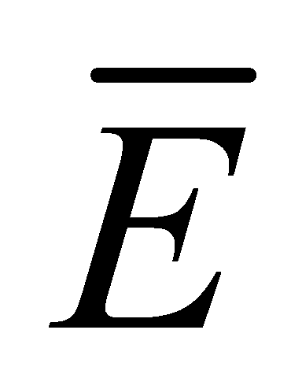
2) Gi¶ sö E 1 vµ E 2 lµ hai sù kiÖn. NÕu E 1 E 2 th× p (E 1) p (E 2) . Vµ cã p (E 1E 2) + p (E 1 E 2) =p (E 1) + p (E 2) . Do ®ã p (E 1E 2) =p (E 1) + p (E 2) khi vµ chØ khi E 1 E 2 = , tøc lµ khi E 1 vµ E 2 lµ hai sù kiÖn lo¹i trõ lÉn nhau.
Cho
E
1 vµ
E
2
lµ hai sù kiÖn, víi p
(E
2)
> 0. Ta ®Þnh nghÜa x¸c
suÊt cã ®iÒu kiÖn
cña E
1
khi cã E
2
, ký hiÖu
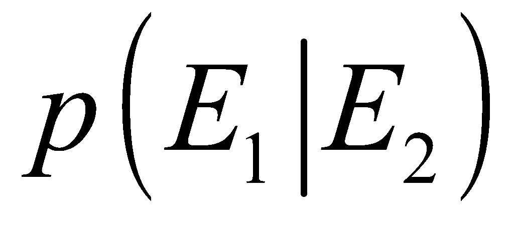
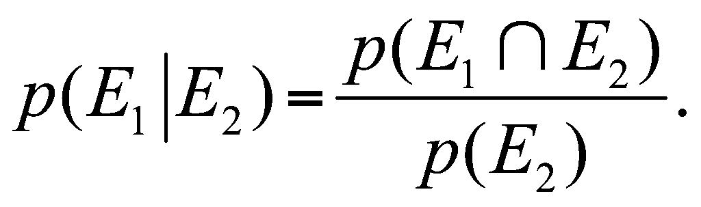
Tõ ®Þnh nghÜa ta suy ra c«ng thøc Bayes :
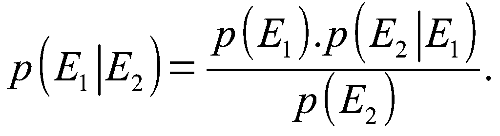
Ta nãi hai sù kiÖn E 1 vµ E 2 lµ ®éc lËp víi nhau, nÕu p (E 1 E 2) =
p(E1).p(E2).
Khi
®ã ta cã:
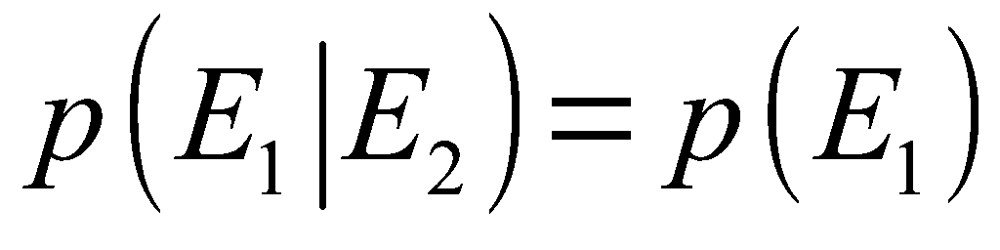 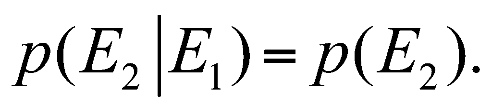
Gi¶ sö lµ mét kh«ng gian mÉu víi mét ph©n bè x¸c suÊt P . Ta gäi mét ®¹i lîng ngÉu nhiªn trªn lµ mét ¸nh x¹ g¸n cho mçi s mét sè thùc (s ). HiÓn nhiªn, nÕu vµ lµ c¸c ®¹i lîng ngÉu nhiªn trªn , th× , . ®îc ®Þnh nghÜa bëi :
s : ( ) (s ) (s) (s ) , (. ) (s) (s). (s).
còng lµ c¸c ®¹i l¬ng ngÉu nhiªn trªn .
Gi¶ sö lµ mét ®¹i lîng ngÉu nhiªn trªn kh«ng gian mÉu . §iÒu ®ã cã nghÜa lµ víi mäi s , lÊy gi¸ trÞ b»ng (s ) víi x¸c suÊt p(s). Ta ®Þnh nghÜa gi¸ trÞ kú väng (hay trung b×nh, hay kú väng to¸n häc) cña lµ
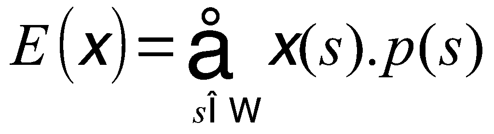
Ph¬ng sai cña ®¹i lîng ngÉu nhiªn cã gi¸ trÞ trung b×nh ®îc ®Þnh nghÜa lµ Var ( ) = E (( )2 ).
C¨n
bËc hai kh«ng ©m cña Var (
)®îc gäi lµ ®é
lÖch chuÈn cña
.

2.2.2. TÝnh bÝ mËt hoµn toµn cña mét hÖ mËt m·.
N¨m 1949, C. Shannon c«ng bè c«ng tr×nh Lý thuyÕt truyÒn th«ng cña c¸c hÖ bÝ mËt , ®a ra nhiÒu quan niÖm lµm c¬ së cho viÖc ®¸nh gi¸ tÝnh bÝ mËt cña c¸c hÖ mËt m·, trong ®ã cã kh¸i niÖm tÝnh bÝ mËt hoµn toµn cña mét hÖ mËt m· ®îc ®Þnh nghÜa nh sau: Cho hÖ mËt m· S = (P , C , K , E , D ) . Gi¶ thö trªn c¸c tËp P , C vµ K ®îc x¸c ®Þnh t¬ng øng c¸c ph©n bè x¸c suÊt pP(.), pC(.) vµ pK(.). Nh vËy, víi mäi x P , y C vµ K K , pP(x), pC(y) vµ pK(K) t¬ng øng lµ c¸c x¸c suÊt ®Ó ký tù b¶n râ lµ x, ký tù b¶n m· lµ y vµ kho¸ lµ K. X¸c suÊt cã ®iÒu kiÖn, ch¼ng h¹n, x¸c suÊt cña viÖc b¶n râ lµ x khi b¶n m· lµ y, ®îc ký hiÖu lµ pP(xy). Mét hÖ mËt m· ®îc gäi lµ bÝ mËt hoµn toµn, nÕu víi mäi x P , y C cã pP(xy) = pP(x). §iÒu ®ã cã nghÜa lµ viÖc biÕt x¸c suÊt b¶n râ lµ x lµ nh nhau dï biÕt hay kh«ng biÕt b¶n m· lµ y ; nãi c¸ch kh¸c, cã th«ng tin vÒ b¶n m· kh«ng cho ta biÕt g× thªm vÒ b¶n râ; b¶n râ vµ b¶n m·, víi t c¸ch c¸c biÕn ngÉu nhiªn, lµ ®éc lËp víi nhau. Ta cã ®Þnh lý sau ®©y:
§Þnh lý 2.2.1. Gi¶ sö S = (P , C , K , E , D ) lµ mét hÖ mËt m· víi ®iÒu kiÖn P = C = K , tøc c¸c tËp P , C , K cã sè c¸c phÇn tö b»ng nhau. Khi ®ã, hÖ lµ bÝ mËt hoµn toµn nÕu vµ chØ nÕu mçi kho¸ K K ®îc dïng víi x¸c suÊt b»ng nhau lµ 1/K , vµ víi mäi x P , y C cã mét kho¸ duy nhÊt K K sao cho eK (x ) = y.
Chøng minh. a) Gi¶ thö hÖ S lµ bÝ mËt hoµn toµn. Khi ®ã, víi mäi x P vµ y C cã pP(xy) = pP(x). Ngoµi ra ta cã thÓ gi¶ thiÕt pC(y) > 0 víi mäi y C . Tõ ®ã theo c«ng thøc Bayes ta cã pC(yx ) = pC(y) > 0 . §iÒu ®ã cã nghÜa lµ cã Ýt nhÊt mét kho¸ K sao cho eK (x ) = y . V× vËy, nÕu cè ®Þnh mét x P th× ta cã
C = { eK(x ): K K } K .
Theo gi¶ thiÕt cña ®Þnh lý, C = K , do ®ã
{ eK(x ): K K } = K .
Nhng
®iÒu nµy l¹i cã nghÜa lµ kh«ng thÓ cã hai kho¸ K1
K2
sao cho
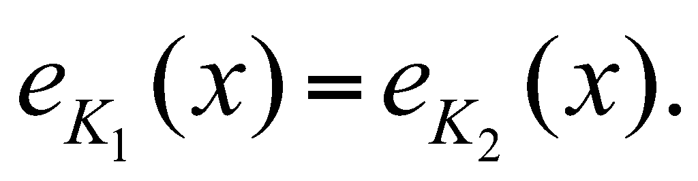
Ký hiÖu n = K vµ ®Æt K = {K1,..., Kn }. Cè ®Þnh mét y C vµ gi¶ thö víi P = {x1,....., xn }, 1 i n. Dïng c«ng thøc Bayes ta l¹i cã
Do gi¶ thiÕt hÖ lµ bÝ mËt hoµn toµn, ta cã pP(xi y) = pP(xi ). Tõ ®ã suy ra víi mäi i , 1 i n, pK (Ki ) = pC (y). VËy c¸c pK (Ki ) (1 i n ) ®Òu b»ng nhau, vµ do ®ã ®Òu b»ng 1/K .
b) B©y giê ta chøng minh ®iÒu ngîc l¹i. Gi¶ thiÕt pK(K) = 1/K víi mäi K K , vµ víi mäi x P , y C cã ®óng mét kho¸ KK sao cho eK (x ) = y . Ta tÝnh:
Khi K ch¹y qua tËp kho¸ K th× dK (y ) ch¹y qua tËp P , do ®ã
vµ ta ®îc pC (y ) = 1/K víi mäi y C .
MÆt kh¸c, gäi K lµ kho¸ duy nhÊt mµ eK (x ) = y , ta cã
pC(y x) = pK(K) = 1/K .
Dïng c«ng thøc Bayes ta l¹i ®îc víi mäi x P , y C :
VËy hÖ lµ bÝ mËt hoµn toµn. §Þnh lý ®îc chøng minh.
2.2.3. ThuËt to¸n x¸c suÊt:
Kh¸i niÖm thuËt to¸n mµ ta thêng hiÓu lµ thuËt to¸n tÊt ®Þnh, ®ã lµ mét tiÕn tr×nh thùc hiÖn c¸c phÐp to¸n trªn d÷ liÖu ®Çu vµo vµ cho kÕt qu¶ ë ®Çu ra. Theo D.E. Knuth, thuËt to¸n cã 5 thuéc tÝnh c¬ b¶n: tÝnh h÷u h¹n, thuËt to¸n lu«n kÕt thóc sau mét sè h÷u h¹n bíc; tÝnh x¸c ®Þnh, mçi bíc cña thuËt to¸n ph¶i ®îc x¸c ®Þnh mét c¸ch chÝnh x¸c; tËp hîp ®Çu vµo vµ ®Çu ra cña mçi thuËt to¸n còng ®îc x¸c ®Þnh râ rµng; vµ tÝnh hiÖu qu¶, mäi phÐp to¸n trong thuËt to¸n ph¶i lµ c¬ b¶n, cã thÓ ®îc thùc hiÖn chÝnh x¸c trong mét thêi gian x¸c ®Þnh. ThuËt to¸n lµ kh¸i niÖm c¬ b¶n ®èi víi viÖc lËp tr×nh trªn m¸y tÝnh, vµ ®· ®îc sö dông rÊt phæ biÕn. Nhng nh ta biÕt, ®èi víi nhiÒu bµi to¸n trong thùc tÕ, kh«ng ph¶i bao giê ta còng t×m ®îc thuËt to¸n gi¶i chóng víi ®é phøc t¹p tÝnh to¸n chÊp nhËn ®îc (ta sÏ xÐt qua vÊn ®Ò nµy trong mét tiÕt sau). V× vËy, cïng víi c¸c thuËt to¸n tÊt ®Þnh, ®èi víi mét sè bµi to¸n ta sÏ xÐt thªm c¸c thuËt to¸n x¸c suÊt, ®ã lµ nh÷ng thuËt to¸n mµ cïng víi d÷ liÖu ®Çu vµo ta bæ sung thªm gi¸ trÞ cña mét ®¹i lîng ngÉu nhiªn t¬ng øng nµo ®ã, thêng lµ c¸c sè ngÉu nhiªn.
C¸c thuËt to¸n x¸c suÊt thêng ®îc x©y dùng cho c¸c bµi to¸n quyÕt ®Þnh, tøc c¸c bµi to¸n x¸c ®Þnh trªn mét tËp hîp d÷ liÖu sao cho øng víi mçi d÷ liÖu bµi to¸n cã mét tr¶ lêi cã hoÆc kh«ng . Ngêi ta chia c¸c thuËt to¸n x¸c suÊt thµnh hai lo¹i: lo¹i thuËt to¸n Monte Carlo vµ lo¹i thuËt to¸n Las Vegas . ThuËt to¸n Monte Carlo lu«n kÕt thóc víi kÕt qu¶ cã hoÆc kh«ng ®èi víi mäi d÷ liÖu ®Çu vµo bÊt kú; cßn thuËt to¸n Las Vegas tuy còng kÕt thóc víi mäi d÷ liÖu, nhng cã thÓ kÕt thóc víi mét th«ng b¸o kh«ng cã tr¶ lêi cã hoÆc kh«ng. ThuËt to¸n Monte Carlo ®îc gäi lµ thiªn vÒ cã, nÕu nã cho tr¶ lêi cã th× tr¶ lêi ®ã ch¾c ch¾n lµ ®óng, cßn nÕu nã cho tr¶ lêi kh«ng th× tr¶ lêi ®ã cã thÓ sai víi mét x¸c suÊt nµo ®ã. T¬ng tù, mét thuËt to¸n Monte Carlo ®îc gäi lµ thiªn vÒ kh«ng, nÕu nã cho tr¶ lêi kh«ng th× tr¶ lêi ®ã ch¾c ch¾n lµ ®óng, cßn nÕu nã cho tr¶ lêi cã th× tr¶ lêi ®ã cã thÓ sai víi mét x¸c suÊt nµo ®ã. Cßn víi thuËt to¸n Las Vegas, nÕu nã kÕt thóc víi tr¶ lêi cã hoÆc kh«ng , th× tr¶ lêi ®ã ch¾c ch¾n ®óng, vµ nã cã thÓ kÕt thóc víi th«ng b¸o kh«ng cã tr¶ lêi víi mét x¸c suÊt nµo ®ã. Trong tiÕt 2.8 sau ®©y ta sÏ cho vµi thÝ dô cô thÓ vÒ mét sè thuËt to¸n x¸c suÊt thuéc c¶ hai lo¹i ®ã.
2.3. §é phøc t¹p tÝnh to¸n.
2.3.1. Kh¸i niÖm vÒ ®é phøc t¹p tÝnh to¸n.
Lý thuyÕt thuËt to¸n vµ c¸c hµm sè tÝnh ®îc ra ®êi tõ nh÷ng n¨m 30 cña thÕ kû 20 ®· ®Æt nÒn mãng cho viÖc nghiªn cøu c¸c vÊn ®Ò “tÝnh ®îc”, “gi¶i ®îc” trong to¸n häc, ®a ®Õn nhiÒu kÕt qu¶ rÊt quan träng vµ lý thó. Nhng tõ c¸i “tÝnh ®îc” mét c¸ch trõu tîng, hiÓu theo nghÜa tiÒm n¨ng,®Õn viÖc tÝnh ®îc trong thùc tÕ cña khoa häc tÝnh to¸n b»ng m¸y tÝnh ®iÖn tö, lµ c¶ mét kho¶ng c¸ch rÊt lín. BiÕt bao nhiªu thø ®îc chøng minh lµ tÝnh ®îc mét c¸ch tiÒm n¨ng, nhng kh«ng tÝnh ®îc trong thùc tÕ, dï cã sù hç trî cña nh÷ng m¸y tÝnh ®iÖn tö ! VÊn ®Ò lµ do ë chç nh÷ng ®ßi hái vÒ kh«ng gian vËt chÊt vµ vÒ thêi gian ®Ó thùc hiÖn c¸c tiÕn tr×nh tÝnh to¸n nhiÒu khi vît qu¸ xa nh÷ng kh¶ n¨ng thùc tÕ. Tõ ®ã, vµo kho¶ng gi÷a nh÷ng n¨m 60 (cña thÕ kû tríc), mét lý thuyÕt vÒ ®é phøc t¹p tÝnh to¸n b¾t ®Çu ®îc h×nh thµnh vµ ph¸t triÓn nhanh chãng, cung cÊp cho chóng ta nhiÒu hiÓu biÕt s©u s¾c vÒ b¶n chÊt phøc t¹p cña c¸c thuËt to¸n vµ c¸c bµi to¸n, c¶ nh÷ng bµi to¸n thuÇn tuý lý thuyÕt ®Õn nh÷ng bµi to¸n thêng gÆp trong thùc tÕ. Sau ®©y ta giíi thiÖu s¬ lîc mét sè kh¸i niÖm c¬ b¶n vµ vµi kÕt qu¶ sÏ ®îc dïng ®Õn cña lý thuyÕt ®ã.
Tríc hÕt, ta hiÓu ®é phøc t¹p tÝnh to¸n (vÒ kh«ng gian hay vÒ thêi gian) cña mét tiÕn tr×nh tÝnh to¸n lµ sè « nhí ®îc dïng hay sè c¸c phÐp to¸n s¬ cÊp ®îc thùc hiÖn trong tiÕn tr×nh tÝnh to¸n ®ã.
D÷ liÖu ®Çu vµo ®èi víi mét thuËt to¸n thêng ®îc biÓu diÔn qua c¸c tõ trong mét b¶ng ký tù nµo ®ã. §é dµi cña mét tõ lµ sè ký tù trong tõ ®ã.
Cho mét thuËt to¸n A trªn b¶ng ký tù (tøc cã ®Çu vµo lµ c¸c tõ trong ) . §é phøc t¹p tÝnh to¸n cña thuËt to¸n A ®îc hiÓu lµ mét hµm sè fA(n ) sao cho víi mçi sè n , fA(n ) lµ sè « nhí, hay sè phÐp to¸n s¬ cÊp tèi ®a mµ A cÇn ®Ó thùc hiÖn tiÕn tr×nh tÝnh to¸n cña m×nh trªn c¸c d÷ liÖu vµo cã ®é dµi n . Ta nãi thuËt to¸n A cã ®é phøc t¹p thêi gian ®a thøc , nÕu cã mét ®a thøc P (n ) sao cho víi mäi n ®ñ lín ta cã fA(n) P(n ), trong ®ã fA(n ) lµ ®é phøc t¹p tÝnh to¸n theo thêi gian cña A.
VÒ sau khi nãi ®Õn c¸c bµi to¸n, ta hiÓu ®ã lµ c¸c bµi to¸n quyÕt ®Þnh , mçi bµi to¸n P nh vËy ®îc x¸c ®Þnh bëi:
- mét tËp c¸c d÷ liÖu vµo I (trong mét b¶ng ký tù nµo ®ã),
- mét c©u hái Q trªn c¸c d÷ liÖu vµo, sao cho víi mçi d÷ liÖu vµo x I , c©u hái Q cã mét tr¶ lêi ®óng hoÆc sai.
Ta nãi bµi to¸n quyÕt ®Þnh P lµ gi¶i ®îc , nÕu cã thuËt to¸n ®Ó gi¶i nã, tøc lµ thuËt to¸n lµm viÖc cã kÕt thóc trªn mäi d÷ liÖu vµo cña bµi to¸n, vµ cho kÕt qu¶ ®óng hoÆc sai tuú theo c©u hái Q trªn d÷ liÖu ®ã cã tr¶ lêi ®óng hoÆc sai. Bµi to¸n P lµ gi¶i ®îc trong thêi gian ®a thøc , nÕu cã thuËt to¸n gi¶i nã víi ®é phøc t¹p thêi gian ®a thøc. Sau ®©y lµ vµi thÝ dô vÒ c¸c bµi to¸n quyÕt ®Þnh:
Bµi to¸n SATISFIABILITY (viÕt t¾t lµ SAT ):
- mçi d÷ liÖu vµo lµ mét c«ng thøc F cña l«gich mÖnh ®Ò, ®îc viÕt díi d¹ng héi chuÈn t¾c, tøc d¹ng héi cña mét sè c¸c “clause”.
- C©u hái lµ: c«ng thøc F cã tho¶ ®îc hay kh«ng ?
Bµi to¸n CLIQUE :
- mçi d÷ liÖu vµo lµ mét graph G vµ mét sè nguyªn k .
- C©u hái lµ: Graph G cã mét clique víi k ®Ønh hay kh«ng ? (mét clique cña G lµ mét graph con ®Çy ®ñ cña G ).
Bµi to¸n KNAPSACK :
- mçi d÷ liÖu lµ mét bé n +1 sè nguyªn d¬ng I = (s1,...,sn ; T ).
- C©u hái lµ: cã hay kh«ng mét vect¬ Boole (x1,...,xn) sao cho
(vect¬ boole lµ vect¬ cã c¸c thµnh phÇn lµ 0 hoÆc 1).
Bµi to¸n thÆng d bËc hai :
- mçi d÷ liÖu gåm hai sè nguyªn d¬ng (a , n ).
- C©u hái lµ: a cã lµ thÆng d bËc hai theo modn hay kh«ng ?
Bµi to¸n hîp sè :
- mçi d÷ liÖu lµ mét sè nguyªn d¬ng N.
- C©u hái: N lµ hîp sè hay kh«ng ? Tøc cã hay kh«ng hai sè m, n >1 sao cho N =m . n ?
T¬ng tù, nÕu ®Æt c©u hái lµ “N lµ sè nguyªn tè hay kh«ng?” th× ta ®îc bµi to¸n sè nguyªn tè .
§èi víi tÊt c¶ c¸c bµi to¸n kÓ trªn, trõ bµi to¸n hîp sè vµ sè nguyªn tè, cho ®Õn nay ngêi ta ®Òu cha t×m ®îc thuËt to¸n gi¶i chóng trong thêi gian ®a thøc.
2.3.2. Líp phøc t¹p.
Ta xÐt mét vµi líp c¸c bµi to¸n ®îc x¸c ®Þnh theo ®é phøc t¹p tÝnh to¸n cña chóng. Tríc hÕt, ta ®Þnh nghÜa P lµ líp tÊt c¶ c¸c bµi to¸n cã thÓ gi¶i ®îc bëi thuËt to¸n trong thêi gian ®a thøc.
Gi¶ sö cho hai bµi to¸n P1 vµ P2 víi c¸c tËp d÷ liÖu trong hai b¶ng ký tù t¬ng øng lµ 1 vµ 2 . Mét thuËt to¸n ®îc gäi lµ mét phÐp qui dÉn bµi to¸n P1 vÒ bµi to¸n P2 , nÕu nã biÕn mçi d÷ liÖu x cña bµi to¸n P1 thµnh mét d÷ liÖu f (x ) cña bµi to¸n P2 , vµ sao cho c©u hái cña P1 trªn x cã tr¶ lêi ®óng khi vµ chØ khi c©u hái cña P2 trªn f (x ) còng cã tr¶ lêi ®óng. Ta nãi bµi to¸n P1 qui dÉn ®îc vÒ bµi to¸n P2 trong thêi gian ®a thøc , vµ ký hiÖu P1 P2 , nÕu cã thuËt to¸n f víi ®é phøc t¹p thêi gian ®a thøc qui dÉn bµi to¸n P1 vÒ bµi to¸n P2 .Ta dÔ thÊy r»ng, nÕu P1 P2 vµ P2 , th× còng cã P1 .
Mét líp quan träng c¸c bµi to¸n ®· ®îc nghiªn cøu nhiÒu lµ líp c¸c bµi to¸n kh¸ thêng gÆp trong thùc tÕ nhng cho ®Õn nay cha cã kh¶ n¨ng nµo chøng tá lµ chóng cã thÓ gi¶i ®îc trong thêi gian ®a thøc. §ã lµ líp c¸c bµi to¸n -dÇy ®ñ mµ ta sÏ ®Þnh nghÜa sau ®©y:
Cïng víi kh¸i niÖm thuËt to¸n tÊt ®Þnh th«ng thêng (cã thÓ m« t¶ chÝnh x¸c ch¼ng h¹n bëi m¸y Turing tÊt ®Þnh), ta xÐt kh¸i niÖm thuËt to¸n kh«ng ®¬n ®Þnh víi mét Ýt thay ®æi nh sau: nÕu ®èi víi m¸y Turing tÊt ®Þnh, khi m¸y ®ang ë mét tr¹ng th¸i q vµ ®ang ®äc mét ký tù a th× cÆp (q,a ) x¸c ®Þnh duy nhÊt mét hµnh ®éng kÕ tiÕp cña m¸y, cßn ®èi víi m¸y Turing kh«ng ®¬n ®Þnh, ta qui íc r»ng (q,a) x¸c ®Þnh kh«ng ph¶i duy nhÊt mµ lµ mét tËp h÷u h¹n c¸c hµnh ®éng kÕ tiÕp; m¸y cã thÓ thùc hiÖn trong bíc kÕ tiÕp mét trong c¸c hµnh ®éng ®ã. Nh vËy, ®èi víi mét d÷ liÖu vµo x , mét thuËt to¸n kh«ng ®¬n ®Þnh (®îc x¸c ®Þnh ch¼ng h¹n bëi mét m¸y Turing kh«ng ®¬n ®Þnh) kh«ng ph¶i chØ cã mét tiÕn tr×nh tÝnh to¸n duy nhÊt, mµ cã thÓ cã mét sè h÷u h¹n nh÷ng tiÕn tr×nh tÝnh to¸n kh¸c nhau. Ta nãi thuËt to¸n kh«ng ®¬n ®Þnh A chÊp nhËn d÷ liÖu x , nÕu víi d÷ liÖu vµo x thuËt to¸n A cã Ýt nhÊt mét tiÕn tr×nh tÝnh to¸n kÕt thóc ë tr¹ng th¸i chÊp nhËn (tøc víi kÕt qu¶ ®óng). Mét bµi to¸n P ®îc gäi lµ gi¶i ®îc bëi thuËt to¸n kh«ng ®¬n ®Þnh trong thêi gian ®a thøc nÕu cã mét thuËt to¸n kh«ng ®¬n ®Þnh A vµ mét ®a thøc p(n ) sao cho víi mäi d÷ liÖu vµo x cã ®é dµi n , x P (tøc c©u hái cña P cã tr¶ lêi ®óng trªn x ) khi vµ chØ khi thuËt to¸n A chÊp nhËn x bëi mét tiÕn tr×nh tÝnh to¸n cã ®é phøc t¹p thêi gian p(n ). Ta ký hiÖu líp tÊt c¶ c¸c bµi to¸n gi¶i ®îc bëi thuËt to¸n kh«ng ®¬n ®Þnh trong thêi gian ®a thøc lµ .
Ngêi ta ®· chøng tá ®îc r»ng tÊt c¶ nh÷ng bµi to¸n trong c¸c thÝ dô kÓ trªn vµ rÊt nhiÒu c¸c bµi to¸n tæ hîp thêng gÆp kh¸c ®Òu thuéc líp , dï r»ng hÇu hÕt chóng ®Òu cha ®îc chøng tá lµ thuéc . Mét bµi to¸n P ®îc gäi lµ .-®Çy ®ñ, nÕu P vµ víi mäi Q ®Òu cã Q P .
Líp cã mét sè tÝnh chÊt sau ®©y:
,
NÕu P1 P2 vµ P2 , th× P1 .
NÕu P1 ,P2 , P1 P2 , vµ P1 lµ -®Çy ®ñ, th× P2 còng lµ -®Çy ®ñ.
NÕu cã P sao cho P lµ -®Çy ®ñ vµ P , th× = .
Tõ c¸c tÝnh chÊt ®ã ta cã thÓ xem r»ng trong líp , lµ líp con c¸c bµi to¸n “ dÔ ” nhÊt, cßn c¸c bµi to¸n -®Çy ®ñ lµ c¸c bµi to¸n “ khã ” nhÊt; nÕu cã Ýt nhÊt mét bµi to¸n -®Çy ®ñ ®îc chøng minh lµ thuéc , th× lËp tøc suy ra = , dï r»ng cho ®Õn nay tuy ®· cã rÊt nhiÒu cè g¾ng nhng to¸n häc vÉn cha t×m ®îc con ®êng nµo hy väng ®i ®Õn gi¶i quyÕt vÊn ®Ò [ = ?], thËm chÝ vÊn ®Ò ®ã cßn ®îc xem lµ mét trong 7 vÊn ®Ò khã nhÊt cña to¸n häc trong thiªn niªn kû míi!
2.3.3. Hµm mét phÝa vµ cöa sËp mét phÝa.
Kh¸i niÖm ®é phøc t¹p tÝnh to¸n cung cÊp cho ta mét c¸ch tiÕp cËn míi ®èi víi vÊn ®Ò bÝ mËt trong c¸c vÊn ®Ò b¶o mËt vµ an toµn th«ng tin. Dï ngµy nay ta ®· cã nh÷ng m¸y tÝnh ®iÖn tö cã tèc ®é tÝnh to¸n cì hµng tû phÐp tÝnh mét gi©y ®ång hå, nhng víi nh÷ng thuËt to¸n cã ®é phøc t¹p tÝnh to¸n cì f (n ) = 2n , th× ngay víi nh÷ng d÷ liÖu cã ®é dµi kho¶ng n = 1000, viÖc thùc hiÖn c¸c thuËt to¸n ®ã ®· kh«ng thÓ xem lµ kh¶ thi, v× nã ®ßi hái thùc hiÖn kho¶ng 10300 phÐp tÝnh! Nh vËy, mét gi¶i ph¸p mËt m· ch¼ng h¹n cã thÓ xem lµ cã ®é b¶o mËt cao, nÕu ®Ó gi¶i m· cÇn ph¶i thùc hiÖn mét tiÕn tr×nh tÝnh to¸n cã ®é phøc t¹p rÊt lín. Do ®ã, viÖc ph¸t hiÖn vµ sö dông c¸c hµm sè cã ®é phøc t¹p tÝnh to¸n rÊt lín lµ cã ý nghÜa hÕt søc quan träng ®èi víi viÖc x©y dùng c¸c gi¶i ph¸p vÒ mËt m· vµ an toµn th«ng tin.
Hµm sè sè häc y = f (x ) ®îc gäi lµ hµm mét phÝa (one-way function), nÕu viÖc tÝnh thuËn tõ x ra y lµ “dÔ”, nhng viÖc tÝnh ngîc tõ y t×m l¹i x lµ rÊt “khã”, ë ®©y c¸c tÝnh tõ “dÔ” vµ “khã” kh«ng cã c¸c ®Þnh nghÜa chÝnh x¸c mµ ®îc hiÓu mét c¸ch thùc hµnh, ta cã thÓ hiÓu ch¼ng h¹n dÔ lµ tÝnh ®îc trong thêi gian ®a thøc (víi ®a thøc bËc thÊp), cßn khã lµ kh«ng tÝnh ®îc trong thêi gian ®a thøc! Thùc tÕ th× cho ®Õn hiÖn nay, viÖc t×m vµ chøng minh mét hµm sè nµo ®ã lµ kh«ng tÝnh ®îc trong thêi gian ®a thøc cßn lµ viÖc rÊt khã kh¨n, cho nªn “khã” thêng khi chØ ®îc hiÓu mét c¸ch ®¬n gi¶n lµ cha t×m ®îc thuËt to¸n tÝnh nã trong thêi gian ®a thøc! Víi c¸ch hiÓu t¬ng ®èi nh vËy vÒ “dÔ” vµ “khã”, ngêi ta ®· ®a ra mét sè thÝ dô sau ®©y vÒ c¸c hµm mét phÝa:
ThÝ dô 1. Cho p lµ mét sè nguyªn tè, vµ lµ mét phÇn tö nguyªn thuû modp. Hµm sè y = x modp (tõ vµo ) lµ mét hµm mét phÝa, v× hµm ngîc cña nã, tÝnh tõ y t×m x mµ ta ký hiÖu , lµ mét hµm cã ®é phøc t¹p tÝnh to¸n rÊt lín.
ThÝ dô 2. Cho n =p.q lµ tÝch cña hai sè nguyªn tè lín. Hµm sè y = x 2 modn (tõ Zn vµo Zn ) còng ®îc xem lµ mét hµm mét phÝa.
ThÝ dô 3. Cho n =p.q lµ tÝch cña hai sè nguyªn tè lín, vµ a lµ mét sè nguyªn sao cho gcd(a , (n)) =1. Hµm sè y = x a modn (tõ Zn vµo Zn ) còng lµ mét hµm mét phÝa, nÕu gi¶ thiÕt lµ biÕt n nhng kh«ng biÕt p,q .
Hµm y = f (x ) ®îc gäi lµ hµm cöa sËp mét phÝa (trapdoor one-way function), nÕu viÖc tÝnh thuËn tõ x ra y lµ “dÔ”, viÖc tÝnh ngîc tõ y t×m l¹i x lµ rÊt “khã”, nhng cã mét cöa sËp z ®Ó víi sù trî gióp cña cöa sËp z th× viÖc tÝnh x tõ y vµ z l¹i trë thµnh dÔ.
ThÝ dô 4 (tiÕp tôc thÝ dô 3). Hµm sè y = x a modn khi biÕt p vµ q lµ hµm cöa sËp mét phÝa. Tõ x tÝnh y lµ dÔ, tõ y t×m x (nÕu chØ biÕt n , a ) lµ rÊt khã, nhng v× biÕt p vµ q nªn biÕt (n) = (p -1)(q -1), vµ dïng thuËt to¸n Euclide më réng t×m ®îc b sao cho a.b 1 (mod(n)) , tõ ®ã dÔ tÝnh ®îc x = y b modn . ë ®©y, cã thÓ xem b lµ cöa sËp.
2.4. Sè nguyªn tè. Ph©n tÝch thµnh thõa sè. Logarit rêi r¹c.
Trong tiÕt nµy ta sÏ xÐt ba bµi to¸n cã vai trß quan träng trong lý thuyÕt mËt m·, ®ã lµ ba bµi to¸n: thö tÝnh nguyªn tè cña mét sè nguyªn, ph©n tÝch mét sè nguyªn thµnh tÝch cña c¸c thõa sè nguyªn tè, vµ tÝnh logarit rêi r¹c cña mét sè theo mét m«®uyn nguyªn tè.
2.4.1. Thö tÝnh nguyªn tè cña mét sè.
Bµi to¸n ®Æt ra rÊt ®¬n gi¶n: Cho mét sè nguyªn d¬ng n bÊt kú. H·y thö xem n cã lµ sè nguyªn tè hay kh«ng? Bµi to¸n ®îc ®Æt ra tõ nh÷ng buæi ®Çu cña sè häc, vµ tr¶i qua h¬n 2000 n¨m ®Õn nay vÉn lµ mét bµi to¸n cha cã ®îc nh÷ng c¸ch gi¶i dÔ dµng. B»ng nh÷ng ph¬ng ph¸p ®¬n gi¶n nh ph¬ng ph¸p sµng EuratosthÌne, tõ rÊt sím ngêi ta ®· x©y dùng ®îc c¸c b¶ng sè nguyªn tè ®Çu tiªn, råi tiÕp tôc b»ng nhiÒu ph¬ng ph¸p kh¸c t×m thªm ®îc nhiÒu sè nguyªn tè lín. Tuy nhiªn, chØ ®Õn giai ®o¹n hiÖn nay cña lý thuyÕt mËt m· hiÖn ®¹i, nhu cÇu sö dông c¸c sè nguyªn tè vµ thö tÝnh nguyªn tè cña c¸c sè míi trë thµnh mét nhu cÇu to lín vµ phæ biÕn, ®ßi hái nhiÒu ph¬ng ph¸p míi cã hiÖu qu¶ h¬n. Trong môc nµy ta sÏ lîc qua vµi tÝnh chÊt cña sè nguyªn tè, sau ®ã giíi thiÖu m«t vµi ph¬ng ph¸p thö tÝnh nguyªn tè cña mét sè nguyªn bÊt kú. Ta ®· biÕt mét sè tÝnh chÊt sau ®©y cña c¸c sè nguyªn tè vµ hîp sè (trong c¸c ph¸t biÓu díi ®©y, ký hiÖu chØ cho sè phÇn tö cña tËp hîp A ):
Tiªu chuÈn Euler-Solovay-Strassen:
a) NÕu n lµ sè nguyªn tè, th× víi mäi sè nguyªn d¬ng a n -1:
 .
.
b) NÕu n lµ hîp sè , th×
Tiªu chuÈn Solovay-Strassen-Lehmann :
a) NÕu n lµ sè nguyªn tè, th× víi mäi sè nguyªn d¬ng a n -1:
b) NÕu n lµ hîp sè, th×
3. Tiªu chuÈn Miller-Rabin :
a) Cho n lµ sè nguyªn lÎ, ta viÕt n - 1 = 2e .u, víi u lµ sè lÎ. NÕu n lµ sè nguyªn tè, th× víi mäi sè nguyªn d¬ng a n -1:
NÕu n lµ hîp sè, th× .
C¸c tiªu chuÈn kÓ trªn lµ c¬ së ®Ó ta x©y dùng c¸c thuËt to¸n x¸c suÊt kiÓu Monte-Carlo thö tÝnh nguyªn tè (hay hîp sè) cña c¸c sè nguyªn. Ch¼ng h¹n, tõ tiªu chuÈn thø nhÊt ta cã thuËt to¸n Euler-Solovay-Strassen sau ®©y:
D÷ liÖu vµo: sè nguyªn d¬ng n vµ t sè ngÉu nhiªn a1,...,at (1ain -1),
1.
for i = 1 to t do


if , then
answer “n lµ sè nguyªn tè ”
else
answer “n lµ hîp sè ” and quit
ThuËt to¸n nµy nÕu cho tr¶ lêi “n lµ hîp sè ” th× ®óng n lµ hîp sè, nhng nÕu nã cho tr¶ lêi “n lµ sè nguyªn tè ” th× tr¶ lêi ®ã cã thÓ sai víi mét x¸c suÊt nµo ®ã. Nh vËy, thuËt to¸n ®ã lµ mét thuËt to¸n x¸c suÊt Monte-Carlo thiªn vÒ cã nÕu xem nã lµ thuËt to¸n thö tÝnh lµ hîp sè ; cßn nã lµ mét thuËt to¸n x¸c suÊt thiªn vÒ kh«ng nÕu xem nã lµ thuËt to¸n thö tÝnh nguyªn tè cña c¸c sè nguyªn.
T¬ng tù nh vËy, dùa vµo c¸c tiªu chuÈn 2 vµ 3 ta còng cã thÓ x©y dùng c¸c thuËt to¸n x¸c suÊt Solovay-Strassen-Lehmann vµ Miller-Rabin kiÓu Monte-Carlo ®Ó thö tÝnh nguyªn tè (hay lµ hîp sè) cña c¸c sè nguyªn. Hai thuËt to¸n ®ã chØ kh¸c thuËt to¸n Euler-Solovay-Strassen kÓ trªn ë chç c«ng thøc trong hµng lÖnh thø 2 cÇn ®îc thay t¬ng øng bëi
hay
trong ®ã u vµ e ®îc x¸c ®Þnh bëi: n - 1 = 2e.u , u lµ sè lÎ.
X¸c suÊt sai lÇm khi nhËn ®îc kÕt qu¶ “n lµ sè nguyªn tè ” trong c¸c thuËt to¸n ®ã ®îc tÝnh nh sau: Gi¶ sö n lµ mét sè lÎ trong kho¶ng N vµ 2N , tøc N <n < 2N . Gäi A lµ sù kiÖn “n lµ hîp sè ”, vµ B lµ sù kiÖn “thuËt to¸n cho kÕt qu¶ tr¶ lêi n lµ sè nguyªn tè ”. Ta ph¶i tÝnh x¸c suÊt =p (A B). Theo tÝnh chÊt b) cña tiªu chuÈn Euler-Solovay-Strassen, nÕu n lµ hîp sè, th× sù kiÖn
®èi víi mçi a ngÉu nhiªn (1a n - 1) cã x¸c suÊt 1/2, v× vËy ta cã

 Theo
c«ng thøc Bayes ta cã
Theo
c«ng thøc Bayes ta cã


Theo ®Þnh lý vÒ sè nguyªn tè, sè c¸c sè nguyªn tè gi÷a N vµ 2N xÊp xØ sè c¸c sè lÎ lµ do ®ã vµ
DÜ nhiªn ta cã Thay c¸c gi¸ trÞ ®ã vµo c«ng thøc trªn, ta ®îc
. (5)
§¸nh gi¸ ®ã còng ®óng ®èi víi thuËt to¸n Solovay-Strassen-Lehmann, cßn ®èi víi thuËt to¸n Miler-Rabin th× ta ®îc mét ®¸nh gi¸ tèt h¬n, cô thÓ lµ
(6)
Chó ý r»ng khi t =50 th× ®¹i lîng ë vÕ ph¶i cña (5) , vµ vÕ ph¶i cña (6) ; do ®ã nÕu chän cho d÷ liÖu vµo thªm kho¶ng 50 sè ngÉu nhiªn ai th× c¸c thuËt to¸n Euler-Solovay-Strassen vµ Solovay-Strassen-Lehmann sÏ thö cho ta mét sè lµ nguyªn tè víi x¸c suÊt sai lÇm 10-13 vµ thuËt to¸n Miller-Rabin víi x¸c suÊt sai lÇm 10-28 !
Ta cã thÓ tÝnh ®îc r»ng ®é phøc t¹p tÝnh to¸n vÒ thêi gian cña c¸c thuËt to¸n x¸c suÊt kÓ trªn lµ vµo cì ®a thøc cña logn , tøc lµ ®a thøc cña ®é ®µi biÓu diÔn cña d÷ liÖu vµo (lµ sè n ), tuy nhiªn c¸c thuËt to¸n ®ã chØ cho ta thö tÝnh nguyªn tè cña mét sè víi mét x¸c suÊt sai lÇm nµo ®ã, dï lµ rÊt bÐ. Trong nhiÒu øng dông, ta muèn cã ®îc nh÷ng sè nguyªn tè víi ®é ch¾c ch¾n 100% lµ sè nguyªn tè. Do ®ã, dï ®· cã c¸c thuËt to¸n x¸c suÊt nh trªn, ngêi ta vÉn kh«ng ngõng t×m kiÕm nh÷ng thuËt to¸n tÊt ®Þnh ®Ó thö tÝnh nguyªn tè víi ®é chÝnh x¸c tuyÖt ®èi. Trong mÊy chôc n¨m gÇn ®©y, mét sè thuËt to¸n ®· ®îc ®Ò xuÊt, trong ®ã cã nh÷ng thuËt to¸n ®Æc s¾c nh thuËt to¸n thö tæng Jacobi, ®îc ph¸t hiÖn bëi Adleman, Pomerance vµ Rumely, sau ®ã ®îc ®¬n gi¶n ho¸ bëi Cohen vµ Lenstra; thuËt to¸n thö b»ng ®êng cong elliptic, ®îc ®Ò xuÊt bëi Goldwasser, Kilian, Adleman vµ Huang, ®îc tiÕp tôc hoµn thiÖn bëi Atkin vµ Morain, c¸c thuËt to¸n nµy ®· ®îc dïng ®Ó t×m nhiÒu sè nguyªn tè rÊt lín, thÝ dô dïng thuËt to¸n Atkin-Morain ®· chøng tá ®îc sè (23539+ 1)/3 cã 1065 ch÷ sè thËp ph©n lµ sè nguyªn tè. GÇn ®©y, vµo th¸ng 8/2002, c¸c nhµ to¸n häc ¢n ®é Agrawal, Kayal vµ Saxena ®· ®a ra mét thuËt to¸n tÊt ®Þnh míi thö tÝnh nguyªn tè cã ®é phøc t¹p tÝnh to¸n thêi gian ®a thøc kh¸ ®¬n gi¶n, thuËt to¸n ®ã ®îc m« t¶ nh sau:
ThuËt to¸n Agrawal-Kayal-Saxena:
Input: integer n > 1
if (n is of the form ab, b > 1 ) ouput COMPOSITE;
r =2;
while (r < n )
if (gcd(n , r ) 1) ouput COMPOSITE;
if (r is prime )
let q be the largest prime factor of r - 1;
if and
break;
r r + 1;
}
for a = 1 to
if ouput COMPOSITE;
output PRIME;
ThuËt to¸n nµy ®· ®îc mét sè nhµ to¸n häc kiÓm nghiÖm , ®¸nh gi¸ cao vµ xem lµ mét thuËt to¸n ®Ñp, cã thÓ dïng cho viÖc kiÓm thö tÝnh nguyªn tè cña c¸c sè nguyªn.
Trong thùc tiÔn x©y dùng c¸c gi¶i ph¸p mËt m·, thêng cã nhu cÇu cã c¸c sè nguyªn tè rÊt lín. §Ó t×m ®îc c¸c sè nh vËy, ngêi ta thêng chän ngÉu nhiªn mét sè rÊt lín, råi dïng tríc cho nã mét thuËt to¸n x¸c suÊt ch¼ng h¹n nh thuËt to¸n Miller-Rabin; nÕu thuËt to¸n cho ta kÕt qu¶ “lµ sè nguyªn tè” víi mét x¸c suÊt sai nµo ®ã, th× sau ®ã ta dïng tiÕp mét thuËt to¸n tÊt ®Þnh (ch¼ng h¹n nh thuËt to¸n trªn ®©y) ®Ó b¶o ®¶m ch¾c ch¾n 100% r»ng sè ®ã lµ sè nguyªn tè. ThuËt to¸n Agrawal-Kayal-Saxena trªn ®©y ®îc chøng tá lµ cã ®é phøc t¹p thêi gian ®a thøc cì O((logn)12) khi thö trªn sè n ; vµ nÕu sè nguyªn tè ®îc thö cã d¹ng Sophie Germain, tøc d¹ng 2p +1, th× ®é phøc t¹p thêi gian sÏ chØ lµ cì O((logn)6).
Ph©n tÝch thµnh thõa sè nguyªn tè.
Bµi to¸n ph©n tÝch mét sè nguyªn > 1 thµnh thõa sè nguyªn tè còng ®îc xem lµ mét bµi to¸n khã thêng ®îc sö dông trong lý thuyÕt mËt m·. BiÕt mét sè n lµ hîp sè th× viÖc ph©n tÝch n thµnh thõa sè míi lµ cã nghÜa; do ®ã thêng khi ®Ó gi¶i bµi to¸n ph©n tÝch n thµnh thõa sè, ta thö tríc n cã lµ hîp sè hay kh«ng (ch¼ng h¹n b»ng mét trong c¸c thuËt to¸n ë môc tríc); vµ bµi to¸n ph©n tÝch n thµnh thõa sè cã thÓ dÉn vÒ bµi to¸n t×m mét íc sè cña n, v× khi biÕt mét íc sè d cña n th× tiÕn tr×nh ph©n tÝch n ®îc tiÕp tôc thùc hiÖn b»ng c¸ch ph©n tÝch d vµ n/d.
Bµi to¸n ph©n tÝch thµnh thõa sè, hay bµi to¸n t×m íc sè cña mét sè nguyªn cho tríc, ®· ®îc nghiªn cøu nhiÒu, nhng còng cha cã mét thuËt to¸n hiÖu qu¶ nµo ®Ó gi¶i nã trong trêng hîp tæng qu¸t; do ®ã ngêi ta cã khuynh híng t×m thuËt to¸n gi¶i nã trong nh÷ng trêng hîp ®Æc biÖt, ch¼ng h¹n khi n cã mét íc sè nguyªn tè p víi
p -1 lµ B-mÞn víi mét cËn B >0 nµo ®ã, hoÆc khi n lµ sè Blum, tøc lµ sè cã d¹ng tÝch cña hai sè nguyªn tè lín nµo ®ã (n =p.q ).
Ta xÐt trêng hîp thø nhÊt víi (p -1)-thuËt tãan Pollard nh sau: Mét sè nguyªn n ®îc gäi lµ B-mÞn, nÕu tÊt c¶ c¸c íc sè nguyªn tè cña nã ®Òu B. ý chÝnh chøa trong (p-1)- thuËt to¸n Pollard lµ nh sau: Gi¶ sö n lµ B-mÞn. Ký hiÖu Q lµ béi chung bÐ nhÊt cña tÊt c¶ c¸c luü thõa cña c¸c sè nguyªn tè B mµ b¶n th©n chóng n. NÕu q l n th× l lnq lnn , tøc ( lµ sè nguyªn bÐ nhÊt lín h¬n x). Ta cã
trong ®ã tÝch lÊy theo tÊt c¶ c¸c sè nguyªn tè kh¸c nhau q B . NÕu p lµ mét thõa sè nguyªn tè cña n sao cho p -1 lµ B-mÞn, th× p -1Q, vµ do ®ã víi mäi a bÊt kú tháa m·n gcd(a,p) = 1, theo ®Þnh lý Fermat ta cã
a Q 1 (modp ). V× vËy, nÕu lÊy d =gcd(aQ - 1, n ) th× p d. NÕu d = n th× coi nh thuËt to¸n kh«ng cho ta ®iÒu mong muèn, tuy nhiªn ®iÒu ®ã ch¾c kh«ng xÈy ra nÕu n cã Ýt nhÊt hai thõa sè nguyªn tè kh¸c nhau. Tõ nh÷ng lËp luËn ®ã ta cã:
(p - 1)-thuËt to¸n Pollard ph©n tÝch thµnh thõa sè :
INPUT: mét hîp sè n kh«ng ph¶i lµ luü thõa cña mét sè nguyªn tè.
OUTPUT: mét thõa sè kh«ng tÇm thêng cña n .
Chän mét cËn cho ®é mÞn B.
Chän ngÉu nhiªn mét sè nguyªn a , 2 a n - 1, vµ tÝnh d = gcd(a,n ). NÕu d 2 th× cho ra kÕt qu¶ (d ).
Víi mçi sè nguyªn tè q B thùc hiÖn:
TÝnh
TÝnh
TÝnh d = gcd(a -1, n).
NÕu 1< d < n th× cho ra kÕt qu¶ (d ). NÕu ngîc l¹i th× thuËt to¸n coi nh kh«ng cã kÕt qu¶.
ThÝ dô: Dïng thuËt to¸n cho sè n = 19048567. Ta chän B =19, vµ a =3, vµ tÝnh ®îc gcd(3,n ) =1. ChuyÓn sang thùc hiÖn bíc 3 ta ®îc b¶ng sau ®©y (mçi hµng øng víi mét gi¸ trÞ cña q ) :
q |
l |
a |
2 3 5 7 11 13 17 19 |
24 15 10 8 6 6 5 5 |
2293244 13555889 16937223 15214586 9685355 13271154 11406961 554506 |
Sau ®ã ta tÝnh d =gcd(554506-1,19048567) = 5281. VËy ta ®îc mét thõa sè p = 5281, vµ do ®ã mét thõa sè n÷a lµ q = n/p = 3607. C¶ hai thõa sè ®ã ®Òu lµ nguyªn tè.
Chó ý r»ng ë ®©y p -1 = 5280 = 25.3.5.11 , cã tÊt c¶ c¸c íc sè nguyªn tè ®Òu 19, do ®ã ch¾c ch¾n thuËt to¸n sÏ kÕt thóc cã kÕt qu¶. ThuËt to¸n sÏ kÕt thóc kh«ng cã kÕt qu¶ khi ®é mÞn B ®îc chän qu¸ bÐ ®Ó kh«ng mét thõa sè nguyªn tè p nµo cña n mµ p -1 chØ chøa c¸c íc sè nguyªn tè B. Nh vËy, cã thÓ xem (p -1)-thuËt to¸n Pollard ph©n tÝch n thµnh thõa sè nguyªn tè lµ cã hiÖu qu¶ ®èi víi nh÷ng sè nguyªn n lµ B-mÞn, ngêi ta tÝnh ®îc thêi gian cÇn ®Ó thùc hiÖn thuËt to¸n ®ã lµ cì O(B lnn /lnB ) phÐp nh©n theo m«®uyn.
B©y giê ta xÐt trêng hîp c¸c sè nguyªn Blum, tøc lµ c¸c sè cã d¹ng n = p.q , tÝch cña hai sè nguyªn tè lín. Tríc hÕt ta chó ý r»ng nÕu ta biÕt hai sè nguyªn kh¸c nhau x vµ y sao cho th× ta dÔ t×m ®îc mét thõa sè cña n . Thùc vËy, tõ ta cã chia hÕt cho n , do n kh«ng lµ íc sè cña x + y hoÆc x - y, nªn gcd(x - y, n) ph¶i lµ mét íc sè cña n, tøc b»ng p hoÆc q .
Ta biÕt nÕu n = p.q lµ sè Blum, th× ph¬ng tr×nh ®ång d
cã 4 nghiÖm, hai nghiÖm tÇm thêng lµ x = a vµ x = -a . Hai nghiÖm kh«ng tÇm thêng kh¸c lµ b , chóng lµ nghiÖm cña hai hÖ ph¬ng tr×nh ®ång d bËc nhÊt sau ®©y:

B»ng lËp luËn nh trªn, ta thÊy r»ng nÕu n lµ sè Blum, a lµ mét sè nguyªn tè víi n, vµ ta biÕt mét nghiÖm kh«ng tÇm thêng cña ph¬ng tr×nh , tøc biÕt mét x a sao cho th× gcd(x - a , n ) sÏ lµ mét íc sè cña n . Nh÷ng ®iÒu trªn ®©y lµ c¨n cø cho mét sè ph¬ng ph¸p t×m íc sè nguyªn tè cña mét sè nguyªn d¹ng Blum; ý chung cña c¸c ph¬ng ph¸p ®ã lµ dÉn vÒ viÖc t×m mét nghiÖm kh«ng tÇm thêng cña mét ph¬ng tr×nh d¹ng , ch¼ng h¹n nh ph¬ng tr×nh .
Mét trêng hîp kh¸ lý thó trong lý thuyÕt mËt m· lµ khi ta biÕt hai sè a ,b lµ nghÞch ®¶o cña nhau theo mod (n ) (nhng kh«ng biÕt (n ) ), vµ t×m mét ph©n tÝch thµnh thõa sè cña n. Bµi to¸n ®îc ®Æt ra cô thÓ lµ: BiÕt n cã d¹ng Blum, biÕt a vµ b sao cho ab 1(mod (n )). H·y t×m mét íc sè nguyªn tè cña n , hay t×m mét nghiÖm kh«ng tÇm thêng cña ph¬ng tr×nh . Ta gi¶ thiÕt ab - 1 = 2s. r víi r lµ sè lÎ. Ta ph¸t triÓn mét thuËt to¸n x¸c suÊt kiÓu Las Vegas nh sau: Ta chän mét sè ngÉu nhiªn v (1 v n - 1). NÕu may m¾n v lµ béi sè cña p hay q, th× ta ®îc ngay mét íc sè cña n lµ gcd(v,n ). NÕu v nguyªn tè víi n , th× ta tÝnh c¸c b×nh ph¬ng liªn tiÕp kÓ tõ v r, ®îc cho ®Õn khi ®îc víi mét t nµo ®ã. Sè t nh vËy bao giê còng ®¹t ®îc, v× cã 2s. r 0 (mod(n )) nªn cã Nh vËy, ta ®· t×m ®îc mét sè sao cho . TÊt nhiªn cã x 1 modn . NÕu còng cã x -1 (modn ) th× x lµ nghiÖm kh«ng tÇm thêng cña , tõ ®ã ta cã thÓ t×m íc sè cña n . NÕu kh«ng th× thuËt to¸n coi nh thÊt b¹i, cho ta kÕt qu¶ kh«ng ®óng. Ngêi ta cã thÓ íc lîng x¸c suÊt cho kÕt qu¶ kh«ng ®óng víi mét lÇn thö víi mét sè v lµ < 1/2, do ®ã nÕu ta thiÕt kÕ thuËt to¸n víi m sè ngÉu nhiªn v1,...vm , th× sÏ cã thÓ ®¹t ®îc x¸c suÊt cho kÕt qu¶ kh«ng ®óng lµ < 1/2m !
TÝnh logarit rêi r¹c theo m«®uyn nguyªn tè.
Cho
p
lµ mét sè nguyªn tè, vµ
lµ mét phÇn tö nguyªn thuû theo modp,
tøc lµ phÇn tö nguyªn thuû cña nhãm
 .
Bµi to¸n tÝnh
logarit rêi r¹c theo
modp
lµ bµi to¸n t×m, víi mçi sè
.
Bµi to¸n tÝnh
logarit rêi r¹c theo
modp
lµ bµi to¸n t×m, víi mçi sè
 ,mét
sè a
( 1
a
p
-1) sao cho
a
modp
, tøc lµ a
log
(modp
-1). Mét thuËt to¸n tÇm thêng ®Ó gi¶i bµi to¸n nµy lµ
thuËt to¸n duyÖt
toµn bé c¸c sè
a
tõ 1 ®Õn p
-
1, cho ®Õn khi t×m ®îc a
tho¶ m·n
a
modp
. TÊt nhiªn,
thuËt to¸n nµy lµ kh«ng hiÖu qu¶ nÕu p
lµ sè nguyªn tè rÊt lín. Mét biÕn d¹ng cña thuËt to¸n ®ã
víi Ýt nhiÒu hiÖu qu¶ h¬n lµ thuËt
to¸n Shanks
sau ®©y:
,mét
sè a
( 1
a
p
-1) sao cho
a
modp
, tøc lµ a
log
(modp
-1). Mét thuËt to¸n tÇm thêng ®Ó gi¶i bµi to¸n nµy lµ
thuËt to¸n duyÖt
toµn bé c¸c sè
a
tõ 1 ®Õn p
-
1, cho ®Õn khi t×m ®îc a
tho¶ m·n
a
modp
. TÊt nhiªn,
thuËt to¸n nµy lµ kh«ng hiÖu qu¶ nÕu p
lµ sè nguyªn tè rÊt lín. Mét biÕn d¹ng cña thuËt to¸n ®ã
víi Ýt nhiÒu hiÖu qu¶ h¬n lµ thuËt
to¸n Shanks
sau ®©y:
§Æt . Ta t×m a díi d¹ng Râ rµng a modp khi vµ chØ khi . Ta lËp hai danh s¸ch gåm c¸c cÆp vµ c¸c cÆp víi j vµ i ch¹y tõ 0 ®Õn m - 1. Khi ph¸t hiÖn ra cã hai cÆp tõ hai danh s¸ch ®ã cã hai phÇn tö thø hai b»ng nhau lµ ta ®îc kÕt qu¶ ®ã chÝnh lµ gi¸ trÞ log mµ ta cÇn t×m. ThuËt to¸n Shanks cã ®é phøc t¹p cì O(m) phÐp to¸n nh©n vµ O(m) bé nhí (cha kÓ O(m2) phÐp so s¸nh).
Mét thuËt to¸n kh¸c, thuËt to¸n Polig-Hellman, thêng ®îc dïng cã hiÖu qu¶ trong trêng hîp p -1 chØ cã c¸c thõa sè nguyªn tè bÐ, cã néi dung nh sau: Gi¶ thiÕt r»ng p - 1 cã d¹ng ph©n tÝch chÝnh t¾c lµ
§Ó t×m a log (modp -1), ta t×m c¸c sè ai sao cho víi i = 1,...,k. Sau khi t×m ®îc c¸c ai nh vËy, th× hÖ ph¬ng tr×nh ,®îc gi¶i theo ®Þnh lý sè d Trung quèc, sÏ cho ta lêi gi¶i cÇn t×m. VËy, vÊn ®Ò lµ x¸c ®Þnh c¸c . VÊn ®Ò nµy ®îc ph¸t biÓu l¹i nh sau: Gi¶ sö q lµ mét íc sè nguyªn tè cña p - 1, vµ q c p - 1 nhng kh«ng cßn q c + 1 p - 1 . Ta cÇn t×m x = a modq c . Ta biÓu diÔn x díi d¹ng sè q - ph©n nh sau:
V× x = a modq c nªn a viÕt ®îc díi d¹ng a = x + q c.. s , vµ v× , nªn ta cã
Ta ®Æt , vµ tÝnh lÇn lît , ®ång thêi so s¸nh víi ta sÏ t×m ®îc i sao cho Ta lÊy sè i ®ã lµ x0, tøc x0 = i . NÕu c = 1 th× x = x0 , ta t×m xong x . NÕu c >1 th× b»ng c¸ch ®Æt vµ ta dÔ thÊy r»ng
.
Tõ ®ã ta suy ra
T¬ng tù nh ë bíc trªn, tÝnh lÇn lît , ®ång thêi so s¸nh víi ta sÏ t×m ®îc x 1.
Cø lµm nh vËy, ta sÏ t×m ®îc dÇn tÊt c¶ c¸c gi¸ trÞ xi víi i = 0,1,...,c -1, tøc lµ tÝnh ®îc x. Sau khi t×m ®îc tÊt c¶ c¸c gi¸ trÞ x øng víi mäi íc sè nguyªn tè q cña p , th× theo mét nhËn xÐt ë trªn, chØ cÇn gi¶i tiÕp mét hÖ ph¬ng tr×nh ®ång d bËc nhÊt theo c¸c m«®uyn tõng cÆp nguyªn tè víi nhau (b»ng ph¬ng ph¸p sè d Trung quèc), ta sÏ t×m ®îc sè a cÇn t×m, a = log theo modp.
ThÝ dô: Cho p = 29 vµ = 2. H·y tÝnh a =log 218 theo mod29. Ta cã p - 1 = 28 = 22. 71 . Theo thuËt to¸n Polig-Hellman, ta t×m lÇn lît a mod 4 vµ a mod 7. Theo c¸c bíc tÝnh to¸n nh m« t¶ ë trªn, ta sÏ t×m ®îc a mod 4 = 3 vµ a mod 7 =4 .Tõ ®ã gi¶i hÖ ph¬ng tr×nh
ta ®îc nghiÖm x 11 (mod28), tøc ®îc 11 = log 218 theo mod29. ThuËt to¸n Polig-Hellman cho ta mét c¸ch tÝnh logarit rêi r¹c kh¸ hiÖu qu¶, nhng chØ khi p -1 chØ cã c¸c thõa sè nguyªn tè bÐ. V× vËy, nÕu p -1 cã Ýt nhÊt mét thõa sè nguyªn tè lín th× thuËt to¸n ®ã khã ®îc thùc hiÖn cã hiÖu qu¶, tøc trong trêng hîp ®ã bµi to¸n tÝnh logarit rêi r¹c theo modp vÉn lµ mét bµi to¸n khã. Mét líp c¸c sè nguyªn tè p mµ p - 1 cã Ýt nhÊt mét íc sè nguyªn tè lín lµ líp c¸c sè nguyªn tè d¹ng p = 2q + 1, trong ®ã q lµ nguyªn tè. Nh÷ng sè nguyªn tè d¹ng ®ã ®îc gäi lµ sè nguyªn tè Sophie Germain, cã vai trß quan träng trong viÖc x©y dùng mét líp kh¸ th«ng dông c¸c hÖ mËt m· cã kho¸ c«ng khai.
Ngêi ta còng ®· nghiªn cøu ph¸t triÓn nhiÒu thuËt to¸n kh¸c, c¶ thuËt to¸n tÊt ®Þnh, c¶ thuËt to¸n x¸c suÊt, ®Ó tÝnh logarit rêi r¹c, nhng cha cã thuËt to¸n nµo ®îc chøng tá lµ cã ®é phøc t¹p tÝnh to¸n víi thêi gian ®a thøc.